Generated by SSCF Data Extractor v0.2.2 at 2018-02-07T09:30:00.820Z (1517995800)
Seiya (10000101)
Pegasus Meteor Fist (60001001)
Fires a Supersonic Fist at enemies in front, temporarily disabling them.
[Fury Type]
Cosmo Burst Upper (60001002)
A powerful uppercut that can launch
opponents into the air.
[Physical Type]
Pegasus Comet Fist (60001003)
Technique that concentrates Pegasus Meteor Fist into a single spot.
Has a piercing effect but weakened each time an opponent is hit.
[Physical Type]
Cosmo Torch (60001004)
Fighting technique of Saints, burning
their inner Comsmo.
Vitality stat is enhanced.
[Fury Type]
Note: Always in effect.
Seventh Sense (60001007)
HP of all Bronze Saints are increased
by Awakened Seiya's Inspiration.
Also only Pegasus Seiya can negate Knockbacks.
The more Bronze Saints, the greater the effect.
[Fury Type]
Note: Always in effect.
Combo Plus I (60001100)
Gets additional Combos during a battle.
[Max Level: 4]
Note: Combo Plus effect can be stacked.
Note: Only activated when this character is included in the Attack party.
Shiryu (10000201)
Rozan Rising Dragon (60002001)
Ultimate technique of Dragon that can reverse even the flow of Rozan falls.
Can launch opponents into the air.
[Fury Type]
Swoop Kick (60002002)
Jumps high into the air and releases a powerful flying kick.
Deals damage to an opponent and surrounding enemies by the released energy waves.
[Physical Type]
Rozan Dragon Flight (60002003)
Enveloped in dragon fury, charges at enemy.
When hit, opponents are pushed back.
[Physical Type]
Old Master's Lesson (60002004)
Fighting technique taught by Rozan Goroho.
Raises Cosmo Gauge recovery amount.
[Fury Type]
Note: Always in effect.
Seventh Sense (60002007)
Awakened to the Seventh Sense.
During battle, Shiryu's Cosmo Gauge gradually recovers.
[Fury Type].
Note: Always in effect.
Combo Plus I (60002100)
Gets additional Combos during a battle.
[Max Level: 4]
Note: Combo Plus effect can be stacked.
Note: Only activated when this character is included in the Attack party.
Hyoga (10000301)
Diamond Dust (60003001)
Releases a Cosmo-created freezing cloud at enemies in front.
[Fury Type]
Freeze Ring (60003002)
Damages multiple enemies with a rebounding Freeze Ring.
[Fury Type]
Aurora Thunder Attack (60003003)
Fires a powerful cold vortex that freezes enemies in front.
[Fury Type]
Absolute Zero (60003004)
Ultimate ice fighting technique that brings Cosmo to
Absolute Zero range. Aura stat is enhanced.
[Fury Type]
Note: Always in effect.
Seventh Sense (60003007)
Hyoga awakened to his Seventh Sense can
decrease enemies' Fury Resistance.
[Fury Type]
Note: Always in effect.
Score Plus BT I (Intensive) (60003100)
Increases Crusade Score earned during a battle.
[Max Level: 20]
Note: Score Plus BT effect can be stacked.
Note: Only activated when this character is included in the Attack party.
Shun (10000401)
Rolling Defense (60004001)
Raises a chain around his team that protects all allies.
Chain absorbs enemy attacks and restores own HP.
[Fury Type]
Note: Barrier effect.
Nebula Chain (60004002)
Attacks enemy with Nebula Chain and
decrease Physical Defense when hitting.
[Physical Type]
Thunder Wave (60004003)
The attack chain chase the ennemy. Chain
extends toward character with lowest HP.
If enemy, attacks; if ally, protects and heals HP.
[Fury Type]
Nebula Radiance (60004004)
Wakens the Cosmo sleeping deep in the heart of Shun and inspires all surrounding.
Damage bonus is applied to entire team.
[Fury Type]
Note: Always in effect.
Seventh Sense (60004007)
Shun's inspiration in awakening to his Seventh Sense
boosts all allies' Accuracy.
[Fury Type]
Note: Always in effect.
Recovery I (Standard) (60004100)
Recovers all allies' HP when a battle ends.
[Max Level: 10]
Note1: Recovery effect can be stacked.
Note2: Only activated when assigned as a Defense Saint
Ikki (10000501)
Phoenix Phantom Fist (60005001)
Fires a Phantom Fist that destroys enemy's spirit
temporarily disabling them.
[Fury Type]
Phoenix Flaming Wings (60005002)
Flapping of Phoenix wings with the power to crush even a planet. Unleashes terrible damage on enemies in front.
[Physical Type]
Phoenix Fury (60005003)
Entire team's HP Absorb is increased.
[Fury Type]
Note: Always in effect.
Undying Phoenix (60005004)
Restores person, just once, from Fallen condition.
[Fury Type]
Seventh Sense (60005007)
Ikki awakens to his Seventh Sense. When he revives from
Fallen, he gains boosts to Physical Attack and Fury Attack.
[Fury Type]
Note1: Always in effect.
Note2: These boosts do not carry over in Cosmo Challenge.
Score Plus BT I (Standard) (60005100)
Increases Crusade Score earned during a battle.
[Max Level: 20]
Note: Score Plus BT effect can be stacked.
Note: Only activated when this character is included in the Attack party.
Jabu (10000601)
Unicorn Gallop (60006001)
Fires countless kicks at opponent.
[Physical Type]
Taunt (60006002)
By Taunting, Jabu temporarily lowers the Accuracy and Evasion ability of enemies.
[Physical Type]
Unicorn Head (60006003)
By doing a charging attack with his unicorn horn, temporarily disabling ennemies.
[Physical Type]
Allegiance to Saori (60006004)
Loyalty toward Saori Kido (Athena) raises Jabu's abilities.
Vitality stat is enhanced.
[Fury Type]
Note: Always in effect.
Seventh Sense (60006007)
Jabu's inspiration in awakening to his Seventh Sense boosts
all allies' Evasion.
[Fury Type]
Note: Always in effect.
Combo Plus I (60006100)
Gets additional Combos during a battle.
[Max Level: 4]
Note: Combo Plus effect can be stacked.
Note: Only activated when this character is included in the Attack party.
Ban (10000701)
Rushing Attack (60007001)
After charging into enemy ranks with Lionet Bomber, carries out a Rush attack within enemy group.
After charging, Ban stays in enemy ranks.
[Physical Type]
Lionet Bomber (60007002)
Wraps Cosmo around entire body and charges. Surprises enemies by changing
the timing of the attack and pushed into the back row when hitting.
[Physical Type]
Note: Can't use if Ban deploys alone.
Violent Upper (60007003)
Powerful uppercut that temporarily disabling ennemy.
[Fury Type]
Unerring Hit (60007004)
Raises concentration and enhances Accuracy stat.
[Fury Type]
Note: Always in effect.
Seventh Sense (60007007)
Awakened to the Seventh Sense,
Ban nullifies Stun, Knockback and Launch with a fixed probability.
[Fury Type].
Note: Always in effect
Damage Cut I (60007100)
Can only use Charge Skills, but reduces damage dealt by enemies instead.
[Max Level: 10]
Note1: Only activated when assigned as a Defense Saint.
Note2: If already learned "Lionet Bomber", activates it at the start of a battle.
Nachi (10000801)
Dead Howling (60008001)
Shockwave of Supersonic Fist inflicts damage on enemies in front.
[Fury Type]
Perfect! (60008002)
Burns his own Cosmo.
Attack speed and damage to enemies is increased, but own Physical Defense is reduced.
[Fury Type]
Jubilation (60008003)
Raises own Inspiration and battle spirit.
When used, damage bonus is applied to attacks.
[Fury Type]
Note: Always in effect.
Piercing Strength (60008004)
Polishes fist speed and pierces through enemy defense. Defense Pierce stat is enhanced.
[Fury Type]
Note: Always in effect.
Seventh Sense (60008007)
Nachi's inspiration in awakening to his Seventh Sense boosts
all allies' Fury Resistance Null.
[Fury Type]
Note: Always in effect.
Combo Plus I (60008100)
Gets additional Combos during a battle.
[Max Level: 4]
Note: Combo Plus effect can be stacked.
Note: Only activated when this character is included in the Attack party.
Geki (10000901)
Hanging Bear (60009001)
Powerful strangle technique that damages a single enemy.
[Physical Type]
Violent Attack (60009002)
Increases normal attack power and damages enemies in wide range.
[Physical Type]
Double Sledgehammer (60009003)
Damages enemies in front with a powerful hit that smashes even the ground, and at the same time disabling them them temporarily.
[Physical Type]
Man's Medal (60009004)
The numerous scars of past battles inspire and give courage and power.
Physical Defense stat is enhanced.
[Fury Type]
Note: Always in effect.
Seventh Sense (60009007)
Awakened to the Seventh Sense,
Geki can take damage that equals or exceeds his current HP 5 times without becoming unable to fight. Also, recovers his HP at the same time.
[Fury Type]
Note: Always in effect
Damage Cut I (60009100)
Can only use Charge Skills, but reduces damage dealt by enemies instead.
[Max Level: 10]
Note1: Only activates when assigned as a Defense Saint.
Note2: If already learned "Double Sledgehammer", activates it at the start of a battle.
Ichi (10001001)
Gorgeous Fang (60010001)
Fires a wide shockwave toward enemies in front.
[Fury Type]
Mellow Poison (60010002)
Stabbing attack using Hydra Fangs woven into the Cloth.
When hit, enemies suffer recurring damage.
[Fury Type]
Blitz (60010003)
Causes wide damage to enemies in front with a quick clawing attack.
[Physical Type]
War Readiness (60010004)
Skill that raises own quickness with a fast step.
Evasion stat is enhanced.
[Fury Type]
Note: Always in effect.
Seventh Sense (60010007)
Ichi awakening to his Seventh Sense surprises the enemy
team and lowers their Physical Attack.
[Fury Type]
Note: Always in effect.
Combo Plus I (60010100)
Gets additional Combos during a battle.
[Max Level: 4]
Note: Combo Plus effect can be stacked.
Note: Only activated when this character is included in the Attack party.
June (10001101)
Healing Cosmo (60011001)
Releases Cosmo and heals HP of all allies.
[Fury Type]
Chameleon Wave (60011002)
Uses a whip to send a shockwave into enemies in front.
[Fury Type]
Mirage (60011003)
Secret art that creates an illusion among the enemy that makes them fight each other.
[Fury Type]
Camouflage (60011004)
Raises Cosmo to reduce damage taken.
[Fury Type]
Note: Always in effect.
Seventh Sense (60011007)
Awakened to the Seventh Sense,
June's Inspiration gradually recovers HP of all allies during a battle.
Also, whenever her HP drops by 1%, cancels status ailments and debuffs on herself.
[Fury Type]
Note: Always in effect
Recovery I (Intensive) (60011100)
Recovers all allies' HP when a battle ends.
[Max Level: 10]
Note1: Recovery effect can be stacked.
Note2: Only activated when assigned as a Defense Saint
Black Pegasus (10001201)
Black Meteor Fist (60012001)
Swarms enemy with countless strikes and, when hit, causes recurring damage to enemies.
[Fury Type]
Black Shock (60012002)
Focuses Black Meteor Fist on a single spot. In addition to enemies taking recurring damage when hit, Physical Defense is lowered.
[Fury Type]
Wall of Fury (60012003)
Raises own Cosmo to resist enemy's Cosmo.
Fury Resistance stat is enhanced.
[Fury Type]
Note: Always in effect.
Extreme Cosmo (60012004)
Raises own Cosmo and increases attack power.
Physical Attack stat is enhanced.
[Fury Type]
Note: Always in effect.
Seventh Sense (60012007)
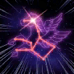
Black Pegasus's inspiration in awakening his Seventh Sense
boosts Black Saints' Fury Attack. Effect boosted according
to number of Black Saints in party.
[Fury Type]
Note: Always in effect.
Recovery I (Delayed) (60012100)
Recovers all allies' HP when a battle ends.
[Max Level: 10]
Note1: Recovery effect can be stacked.
Note2: Only activates when assigned as a Defense Saint.
Black Dragon (10001301)
Black Rising Dragon (60013001)
Sends Cosmo in the shape of a black dragon rushing violently at the enemy.
When hit, enemy is rendered temporarily Disabled.
[Fury Type]
Black Blow (60013002)
Does series of attacks on enemies in front.
[Physical Type]
The Shinchuten (60013003)
Thrusts accurately at blood-stopping vital spot, closing wound.
With proper timing, heals HP of ally with lowest HP and temporarily enhances Physical Defense.
[Fury Type]
Demolish (60013004)
Strong resolve to overcome adversity increases Black Dragon's strength.
Max HP enhanced.
[Fury Type]
Note: Always in effect.
Seventh Sense (60013007)
Black Dragon's inspiration in awakening his Seventh Sense
boosts Black Saints' Max HP.
[Fury Type]
Note1: Always in effect.
Note2: Effect boosted according to number of Black Saints in party.
Damage Cut I (60013100)
Can only use Charge Skills and the Shinchuten, but reduces damage dealt by enemies instead.
[Max Level: 10]
Note1: Only activates when assigned as a Defense Saint.
Note2: If already learned the "Shinchuten", activates it repeatedly.
Black Swan (10001401)
Black Blizzard (60014001)
Fires a black snow shockwave at opponent, and opponents are pushed back when hit.
[Fury Type]
Black Chill (60014002)
Slams a compressed cold air bomb into opponent. When hit, disabling enemy temporarily
[Fury Type]
Black Kick (60014003)
Shockwave from kick damages enemies.
[Physical Type]
War Readiness (60014004)
Skill that raises own quickness with a fast step. Evasion stat is enhanced.
[Fury Type]
Note: Always in effect.
Seventh Sense (60014007)
Black Swan awakening to his Seventh Sense surprises the
enemy team and lowers their Fury Critical
[Fury Type]
Note: Always in effect.
Recovery I (Standard) (60014100)
Recovers all allies' HP when a battle ends.
[Max Level: 10]
Note1: Recovery effect can be stacked.
Note2: Only activates when assigned as a Defense Saint.
Black Andromeda (10001501)
Black Nebula Chain (60015001)
Grabs opponent with Black Nebula Chain and absorbs their HP.
[Fury Type]
Black Storm (60015002)
Swings a large chain that causes a shockwave that damages enemies in a wide range.
[Fury Type]
Black Bind (60015003)
Wraps enemy in a chain
disabling temporarily.
[Fury Type]
Wall of Fury (60015004)
Raises own Cosmo to resist enemy's Cosmo.
Fury Resistance stat is enhanced.
[Fury Type]
Note: Always in effect.
Seventh Sense (60015007)
Black Andromeda's inspiration in awakening his Seventh Sense
boosts Black Saints' Accuracy and Andromeda's Fury RES Null.
Effect boosted according to number of Black Saints in party.
[Fury Type]
Note: Always in effect.
Recovery I (Delayed) (60015100)
Recovers all allies' HP when a battle ends.
[Max Level: 10]
Note1: Recovery effect can be stacked.
Note2: Only activates when assigned as a Defense Saint.
Black Phoenix (10001601)
Black Fury (60016001)
Heals self by stimulating own flesh.
Furthermore, each time healing takes place due to Black Fury, attack power is increased.
[Fury Type]
Black Phoenix Phantom Fist (60016002)
Smashes a powerful fist onto a single enemy.
[Physical Type]
Black Wave (60016003)
Ignites Cosmos to enhance sensory nerves.
Attack speed is temporarily raised.
Cosmo Gauge is also recovered.
[Fury Type]
Vital Point (60016004)
Black Saint fighting method that accurately strikes enemy's vital spot. Raises Critical Chance stat.
[Fury Type]
Note: Always in effect.
Seventh Sense (60016007)
Black Phoenix awakening to his Seventh Sense surprises
the enemy team and lowers their Fury Attack.
[Fury Type]
Note: Always in effect.
Recovery I (Intensive) (60016100)
Recovers all allies' HP when a battle ends.
[Max Level: 10]
Note1: Recovery effect can be stacked.
Note2: Only activates when assigned as a Defense Saint.
Marin (10001701)
Meteor Fist (60017001)
Supersonic Fists rain down randomly from the air.
[Fury Type]
Eagle Toe Flash (60017002)
Does a flying kick toward enemies in front.
When hit, target's attack speed is temporarily slowed.
[Physical Type]
Silence (60017003)
Marin takes command of the battlefield and suppresses enemy battle ability.
All enemies are Silenced.
[Fury Type]
Galactic Will (60017004)
Calls forth the Cosmo of surrounding allies and magnifies them. During battle, all allies are given a damage bonus.
[Fury Type]
Note: Always in effect.
Seventh Sense (60017007)
Marin's inspiration in awakening her Seventh Sense boosts
Technique-type Saints' Physical Attack and Phys. Critical.
Effect boosted by number of Technique-types in party.
[Fury Type] *Always in effect.
Combo Plus I (60017100)
Gets additional Combos during a battle.
[Max Level: 4]
Note: Combo Plus effect can be stacked.
Note: Only activated when this character is included in the Attack party.
Shaina (10001801)
Thunder Claw (60018001)
Sharp fangs wrapped in lightning rip apart all enemies.
[Fury Type]
Inspiration (60018002)
Shaina bestows courage on all allies, temporarily raising their attack speed and power from the start of battle.
[Fury Type]
Lightning Thrust (60018003)
Stabbing charge that causes enemy to recoil in fear. Disabling enemy temporarily when hit.
[Physical Type]
Scatter Flash (60018004)
Cosmo surrounding Shaina aids ally movement.
Technique stat is enhanced.
[Fury Type]
Note: Always in effect.
Seventh Sense (60018007)
Shaina's inspiration in awakening to her Seventh Sense
boosts all allies' Fury Resistance.
[Fury Type]
Note: Always in effect.
Combo Plus I (60018100)
Gets additional Combos during a battle.
[Max Level: 4]
Note: Combo Plus effect can be stacked.
Note: Only activated when this character is included in the Attack party.
Misty (10001901)
Marble Tripper (60019001)
Creates a powerful vortex of air currents,
and damages enemy farthest from you.
[Fury Type]
Lovely Strike (60019002)
Attacks farthest enemy disabling him temporarily.
[Fury Type]
Splendid Wave (60019003)
Slams a wall of cold air into enemies in front.
[Fury Type]
Piercing Strength (60019004)
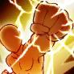
Polishes fist speed and pierces through enemy defense. Defense Pierce stat is enhanced.
[Fury Type]
Note: Always in effect.
Seventh Sense (60019007)
Misty awakening to his Seventh Sense surprises the enemy
team and lowers their Evasion.
[Fury Type]
Note: Always in effect.
Combo Plus I (60019100)
Gets additional Combos during a battle.
[Max Level: 4]
Note: Combo Plus effect can be stacked.
Note: Only activated when this character is included in the Attack party.
Algol (10002001)
Petrify (60020001)
Fires magical power reflected off Medusa's Shield into the enemy ranks and Petrifies them.
[Fury Type]
Rolling Shockwave (60020002)
Wraps the fist in a Cosmo, so that range for a normal attack is increased.
[Physical Type]
Ras'Al Ghul Gorgonio (60020003)
Does a powerful flying kick at the enemy and absorbs their Cosmo.
[Fury Type]
Demolish (60020004)
Strong resolve to overcome adversity increases Algol's strength.
Max HP enhanced.
[Fury Type]
Note: Always in effect.
Seventh Sense (60020007)
Algol's inspiration in awakening his Seventh Sense boosts
Technique-type Saints' Phys. Critical. Effect boosted
according to number of Technique-types in party.
[Fury Type]
Note: Always in effect.
Combo Plus I (60020100)
Gets additional Combos during a battle.
[Max Level: 4]
Note: Combo Plus effect can be stacked.
Note: Only activated when this character is included in the Attack party.
Asterion (10002101)
Million Ghost Attack (60021001)
Splits apart at supersonic speed and rains countless kicks at the enemy.
In addition, enemy may also be Silenced.
[Fury Type]
Mind Read (60021002)
Anticipates a single enemy's movement and Silences them.
[Fury Type]
Supersonic Punch (60021003)
Hits at more than supersonic speed and reduces the opponent's Cosmo.
[Fury Type]
Hound Fang (60021004)
Skill that improves physical abilities through the blessings of the Zodiac.
Damage to enemies is increased.
[Fury Type]
Note: Always in effect.
Seventh Sense (60021007)
Awakens you to your Seventh Sense and shortens attack wait
time. You also become immune to Silence.
[Fury Type]
Note: Always in effect.
Combo Plus I (60021100)
Gets additional Combos during a battle.
[Max Level: 4]
Note: Combo Plus effect can be stacked.
Note: Only activated when this character is included in the Attack party.
Moses (10002201)
Kaitos Spouting Bomber (60022001)
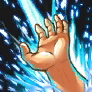
Creates a water current that throws the enemy into the air.
[Fury Type]
Big Wave (60022002)
Creates a water current at the enemy's feet that inflicts damage.
When hit, enemy Fury Resistance is lowered.
[Fury Type]
White Whale Rage (60022003)
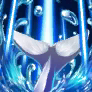
Swings both arms and causes huge damage to enemy.
[Physical Type]
Man's Medal (60022004)
The numerous scars of past battles inspire and give courage and power.
Physical Defense stat is enhanced.
[Fury Type]
Note: Always in effect.
Seventh Sense (60022007)
Moses awakening to his Seventh Sense surprises the
enemy team and lowers their Fury Critical.
[Fury Type]
Note: Always in effect.
Damage Cut I (60022100)
Can only use Charge Skills and the Big Wave, but reduces damage dealt by enemies instead.
[Max Level: 10]
Note1: Only activates when assigned as a Defense Saint.
Note2: If already learned the "Big Wave", activates it repeatedly.
Aldebaran (10002301)
Great Horn (60023001)
Using Iai sword-drawing skills, sends a Lightspeed Shockwave that pushes the enemy back.
[Physical Type]
Grand Knock (60023002)
Slams the ground, scaring surrounding enemies. Disabling enemy temporarily when hit.
[Physical Type]
Raging Bull (60023003)
For a few seconds after battle starts, creates a defensive wall that protects entire team.
[Physical Type]
Flare (60023004)
Pride toward the Fighter raises your strength.
Vitality stat is enhanced.
[Fury Type]
Note: Always in effect.
Seventh Sense (60023007)
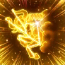
Use your Seventh Sense and gain a chance of
nullifying Stun, Knockback, Launch and Freeze effects.
[Fury Type]
Note: Always in effect.
Damage Cut I (60023100)
Can only use Charge Skills, but reduces damage dealt by enemies instead.
[Max Level: 10]
Note1: Only activated when assigned as a Defense Saint.
Note2: If already learned "Raging Bull", activates it at the start of a battle.
Saga (10002401)
Galaxian Explosion (60024001)
Ultimate blow that can even crush stars in the Galaxy.
Inflicts huge damage on surrounding enemies.
[Fury Type]
Another Dimension (60024002)
Blows enemy to the Otherworld.
Grabs a single enemy, causes damage and then sends them to the back row.
[Fury Type]
Phantom Demon Emperor Fist (60024003)
Legendary Phantom Fist that seizes control of an opponent's mind.
Disabling temporarily enemy, then absorbs their Physical Attack and raises your own Physical Attack.
[Fury Type]
Wall of Fury (60024004)
Raises own Cosmo to resist enemy's Cosmo.
Fury Resistance stat is enhanced.
[Fury Type]
Note: Always in effect.
Seventh Sense (60024007)
Using the Seventh Sense, damage from enemy reduced.
[Fury Type]
Note: Always in effect.
Recovery II (Delayed) (60024100)
Recovers all allies' HP when a battle ends.
[Max Level: 10]
Note1: Recovery effect can be stacked.
Note2: Only activates when assigned as a Defense Saint.
Deathmask (10002501)
Dark World Waves (60025001)
Unleashes a vortex to the otherworld towards enemies, inflicting damage.
[Fury Type]
Summon Ghost (60025002)
Summons souls from the otherworld and inflicts damage on enemy.
This move can be activated even when you are Fallen.
[Fury Type]
Final Wish (60025003)
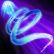
Absorbs the remains of Cosmo drifting to the otherworld.
During battle, each time any ally or enemy becomes Fallen, his attack power increases.
[Fury Type]
Hades Invitation (60025004)
Tempts enemy to death's door and lowers all enemy Physical Attack and Fury Attack.
[Fury Type]
Note: Always in effect.
Seventh Sense (60025007)
Awakened to the Seventh Sense,
Deathmask automatically heals himself.
Also, whenever his HP drops by 1%, cancels status ailments and debuffs on himself.
[Fury Type]
Note: Always in effect
Score Plus BT I (Delayed) (60025100)
Increases Crusade Score earned during a battle.
[Max Level: 20]
Note: Score Plus BT effect can be stacked.
Note: Only activated when this character is included in the Attack party.
Aiolia (10002601)
Lightning Plasma (60026001)
Aiolia's most powerful move. Lightspeed punch striking
100 million times in one second. Causes massive damage to enemies in front.
[Physical Type]
Lightning Bolt (60026002)
Gold Saint's basic move, Lightspeed, is raised to the level of an ultimate move, creating simple yet effective attack.
[Physical Type]
Lion's Guidance (60026003)
Arouses the Cosmo of Aiolia and ignites all allies' Cosmos. Temporarily increases attack power and speed of all allies.
[Fury Type]
Lightspeed Fist (60026004)
Further sharpens the Lightspeed Fist. Attack speed is increased.
[Fury Type]
Note: Always in effect.
Seventh Sense (60026007)
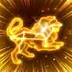
Seventh Sense adds a "Cosmo Gauge Absorb" effect to Aiolia's
normal attacks.
[Fury Type]
Note: Always in effect.
Combo Plus II (60026100)
Gets additional Combos during a battle.
[Max Level: 5]
Note: Combo Plus effect can be stacked.
Note: Only activated when this character is included in the Attack party.
Shaka (10002701)
Demon Hunter (60027001)
Compresses Cosmo, causing an explosion.
Random and multiple explosions occur, causing damage to target and a chance of Blow effect.
[Fury Type]
Heavenly Judgment (60027002)
Bathes one enemy with a Cosmo current that inflicts damage and has the effect of canceling their action.
[Fury Type]
Heaven-Dancing Ring (60027003)
Changes Heaven-Dancing Ring to combo attack that rebounds
throughout the enemy ranks. When hit, deals damage and
a chance of disabling temporarily enemies.
[Physical Type]
Galactic Will (60027004)
Calls forth the Cosmo of surrounding allies and magnifies them. During battle, all allies are given a damage bonus.
[Fury Type]
Note: Always in effect.
Seventh Sense (60027007)
Use your Seventh Sense to Silence the opponent for a period
of time at start of battle.
[Fury Type]
Note1: Always in effect.
Note2: Silence rate increased according to Skill Level. Enemies
lower than your Skill Level always get Silenced.
Recovery II (Delayed) (60027100)
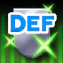
Recovers all allies' HP when a battle ends.
[Max Level: 10]
Note1: Recovery effect can be stacked.
Note2: Only activates when assigned as a Defense Saint.
Miro (10002801)
Scarlet Needle Antares (60028001)
When activated, sends a fierce thrust attack at enemy with lowest HP.
Also can cancel action of hit enemy.
[Physical Type]
Scarlet Needle (60028002)
Crimson needle that stimulates the central nervous system of the enemy, causing terrible pain.
Carries out a fast thrust attack on a single enemy.
[Physical Type]
Restriction (60028003)
Interferes with Cosmo flowing inside an opponent to stop their movement.
Disabling temporarily enemy when hit.
[Fury Type]
Flare (60028004)
Uses superior dodging to make a fool of the opponent.
Technique stat is enhanced.
[Fury Type]
Note: Always in effect.
Seventh Sense (60028007)
Miro uses his Seventh Sense to boost Physical Attack.
Effect boosted according to number of Gold Saints in party.
[Fury Type]
Note: Always in effect.
Score Plus BT I (Standard) (60028100)
Increases Crusade Score earned during a battle.
[Max Level: 20]
Note: Score Plus BT effect can be stacked.
Note: Only activated when this character is included in the Attack party.
Shura (10002901)
Excalibur (60029001)
Shura's deadly Knife Hand, as sharp as a steel razor.
Approaches to the enemy with the highest Aura and inflicts damage.
[Physical Type]
Knife Hand (60029002)
Approaches enemy with highest Aura and inflicts damage.
Cosmo Gauge of hit enemy is reduced.
[Physical Type]
Flare (60029003)
With his dodging technique, toys with his opponent.
Technique stat is enhanced.
[Fury Type]
Note: Always in effect.
Wall of Fury (60029004)
Raises own Cosmo to resist enemy's Cosmo.
Fury Resistance stat is enhanced.
[Fury Type]
Note: Always in effect.
Seventh Sense (60029007)
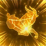
Using the Seventh Sense,
Shura has a chance of ignoring the enemy's Physical Defense.
[Fury Type]
Note: Always in effect.
Score Plus BT I (Standard) (60029100)
Increases Crusade Score earned during a battle.
[Max Level: 20]
Note: Score Plus BT effect can be stacked.
Note: Only activated when this character is included in the Attack party.
Camus (10003001)
Aurora Execution (60030001)
Camus' ultimate technique using a limitless freezing cloud.
Inflicts damage on all enemies and freezes hit enemies.
[Fury Type]
Diamond Dust (60030002)
Uses Cosmo to continuously fire freezing clouds.
[Fury Type]
Freezing Coffin (60030003)
Seals enemy in an ice coffin, Binding them.
Hit enemies are left frozen.
[Fury Type]
Use your Seventh Sense to boost Aura Saints' Physical DEF,
including Camus's. Effect boosted according to number of
Aura Types in party.
[Fury Type]
Note: Always in effect.
Score Plus BT I (Standard) (60030100)
Increases Crusade Score earned during a battle.
[Max Level: 20]
Note: Score Plus BT effect can be stacked.
Note: Only activated when this character is included in the Attack party.
Aphrodite (10003101)
Royal Demon Rose (60031001)
Fires falling petals of the venomous Demon Rose, that steal away enemy's stamina.
Inflicted damage is absorbed as own HP.
[Fury Type]
Funeral of Roses (60031002)
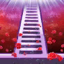
Fires venomous roses in a wide range that inhibits enemy movement.
Hit enemies are left Silenced.
[Fury Type]
Piranha Rose (60031003)
Fires Black Roses at enemy that smash whatever they touch.
Each time they hit an enemy, their power is increased.
[Fury Type]
Amplify Fury (60031004)
Increases own Fury using the flow of the Cosmo.
Aura stat is enhanced.
[Fury Type]
Note: Always in effect.
Seventh Sense (60031007)
Awakened to the Seventh Sense,
Aphrodite's all attacks gain
Cosmo Gauge Reduction.
[Fury Type]
Note: Always in effect
Recovery II (Standard) (60031100)
Recovers all allies' HP when a battle ends.
[Max Level: 10]
Note1: Recovery effect can be stacked.
Note2: Only activates when assigned as a Defense Saint.
Cassios (10003201)
Jumping Smash (60032001)
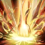
Smashes the ground, inflicting damage on enemies and disabling them temporarily.
[Physical Type]
Tackle (60032002)
Thrusting attack that uses its gigantic body to inflict damage on enemy.
Enemy is also pushed back.
[Physical Type]
Double Lasso (60032003)
Swings huge arms that wrap around and inflict damage on surrounding enemies.
Disabling temporarily enemies when hit.
[Physical Type]
Warrior Resolve (60032004)
Pride toward the Fighter raises your strength.
Vitality stat is enhanced.
[Fury Type]
Note: Always in effect.
Seventh Sense (60032007)
Damage Cut I (60032100)
Can only use Charge Skills, but reduces damage dealt by enemies instead.
[Max Level: 10]
Note1: Only activated when assigned as a Defense Saint.
??? (10003301)
Another Dimension (60033001)
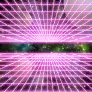
Blows enemy to the Otherworld.
Grabs a single enemy, causes damage and then sends them to own ranks.
[Fury Type]
Wave (60033002)
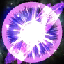
Slams a shockwave into enemy. Disabling temporarily enemies when hit.
[Fury Type]
Coercion (60033003)
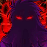
Creates a wide shockwave among the enemy ranks that inflicts damage.
Reduces defense of hit enemies.
[Fury Type]
Galactic Will (60033004)
Calls forth the Cosmo of surrounding allies and magnifies them. During battle, all allies are given a damage bonus.
[Fury Type]
Note: Always in effect.
Seventh Sense (60033007)
Using the Seventh Sense,
Gemini ??? raises the Technique-type Saint's Evasion for all party members including himself.
[Fury Type]
Note: Always in effect.
Recovery I (Delayed) (60033100)
Recovers all allies' HP when a battle ends.
[Max Level: 10]
Note1: Recovery effect can be stacked.
Note2: Only activates when assigned as a Defense Saint.
Saga (10003401)
Galaxian Explosion (60034001)
Ultimate blow that can even crush stars in the Galaxy.
Inflicts huge damage on surrounding enemies.
[Physical Type]
Another Dimension (60034002)
Blows enemy to the Otherworld.
Grabs a single enemy, causing continual damage and sends them to the enemy back row.
Phantom Demon Emperor Fist (60034003)
Legendary Phantom Fist that seizes control of an opponent's mind.
Temporarily Stuns enemy and turns their Physical Attack
into own Physical Attack.
Wall of Fury (60034004)
Raises own Cosmo to resist enemy's Cosmo.
Fury Resistance stat is enhanced.
[Fury Type]
Note: Always in effect.
Seventh Sense (60034007)
Score Plus BT II (Intensive) (60034100)
Increases Crusade Score earned during a battle.
[Max Level: 20]
Note: Score Plus BT effect can be stacked.
Note: Only activated when this character is included in the Attack party.
New Seiya (OCE) (10003501)
Pegasus Comet Fist (60035001)
Concentrates Pegasus Meteor Fist onto a single spot.
Due to piercing effect, causes damage to all enemies hit.
[Fury Type]
Pegasus Meteor Fist (60035002)
Fires a Supersonic Fist at enemies in front, rendering them slowed for a set time.
[Fury Type]
Pegasus Rage (60035003)
Raises Cosmo in the air like a rampaging Pegasus to increase own Physical Critical.
[Fury Type]
Note: Always in effect.
Cosmo Torch (60035004)
Fighting technique of Saints, burning
their inner Comsmo.
Vitality stat is enhanced.
[Fury Type]
Note: Always in effect.
Seventh Sense (60035007)
Seiya awakens to his Seventh Sense and boosts all allies'
Fury Attack whenever he is Fallen.
[Fury Type]
Note: Always in effect.
Combo Plus I (60035100)
Gets additional Combos during a battle.
[Max Level: 4]
Note: Combo Plus effect can be stacked.
Note: Only activated when this character is included in the Attack party.
Mu (10003601)
Starlight Extinction (60036001)
Encloses target in starlight and crashes them in the center of the enemy.
Crash causes damage to all enemies around.
[Fury Type]
Note: If target is down, crashing in center of enemy effect doesn't work.
Cloth Restoration (60036002)
Restores Cosmo Gauge by repairing Cloth.
[Fury Type]
Crystal Wall (60036003)
Forms a barrier of clear light around yourself, protecting you just once from any attribute or status ailment.
Can also reflect any attack back to its source.
[Fury Type]
Note: Barrier effect.
In other words, Cosmo. (60036004)
Having attained the mindset of a Saint, Cosmo Gauge heal amount is increased during battle.
[Fury Type]
Note: Always in effect.
Seventh Sense (60036007)
Seventh Sense lowers the enemy team's HP Drain power.
[Fury Type]
Note: Always in effect.
Recovery II (Intensive) (60036100)
Recovers HP's of all allies when a battle ends.
[Max Level: 10]
Note1: Recovery effect can be stacked.
Note2: Only activated when assigned as a Defense Saint
Aiolos (10003701)
Sagittarius Arrow (60037001)
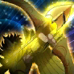
A strike of Fury damage to all enemies in front.
Can be charged and damage increases in accordance with time charged.
Tap on Aiolos' icon while charging to fire the arrow as an option.
[Fury Type]
Sagittarius Radiance (60037002)
Using the power of Sagittarius Radiance, this further increases Cosmo Gauge of the ally with the most accumulated Cosmo power.
[Fury Type]
Atomic Thunderbolt (60037003)
Ultimate move that fires countless lightning bombs. Randomly damages multiple enemies and lowers their Accuracy.
[Fury Type]
Golden Vanguard (60037004)
With the guidance of Aiolos, Fury Attack of all allies is increased.
[Fury Type]
Note: Always in effect.
Seventh Sense (60037007)
Seventh Sense boosts Gold Saints' Physical Defense and Fury
Resistance, including Aiolos's. Effect boosted according to
number of Gold Saints in party.
[Fury Type]
Note: Always in effect.
Recovery II (Standard) (60037100)
Recovers all allies' HP when a battle ends.
[Max Level: 10]
Note1: Recovery effect can be stacked.
Note2: Only activates when assigned as a Defense Saint.
Dohko (10003801)
Rozan Hundred Dragons (60038001)
Ultimate technique that fires stored Cosmo as countless dragons.
Inflicts Fury Damage on all enemies with multi-hit attacks.
[Fury Type]
Rozan Rising Dragon (60038002)
Ultimate technique that can reverse even the flow of Rozan falls.
Inflicts damage on multiple enemies if enemies are close to each other.
[Fury Type]
Libra Buckler (60038003)
Libra Buckler temporarily raises the Physical Defense of the ally with the lowest HP.
[Fury Type]
Libra Trial (60038004)
Judges a Saint's goodness and lowers all enemy fury resistance.
[Fury Type]
Note: Always in effect.
Seventh Sense (60038007)
Dohko awakens to his Seventh Sense and lowers the enemy
team's Cosmo Gauge heal amount.
[Fury Type]
Note: Always in effect.
Activates when attacking, when defeating an enemy, or when taking damage.
Score Plus BT II (Intensive) (60038100)
Increases Crusade Score earned during a battle.
[Max Level: 20]
Note: Score Plus BT effect can be stacked.
Note: Only activated when this character is included in the Attack party.
God Cloth Aiolia (10003901)
Divine Lightning Plasma (60039001)
With the God Cloth, his lightspeed punches striking
100 million times in one second have become even stronger.
Inflicts Fury Damage on all enemies in attack range.
[Fury Type]
Lightning Bite (60039002)
Ultimate technique that strikes single point with lighting enshrouded fist.
Causes fury damage and lowers enemy Accuracy.
[Fury Type]
Lightning Bolt (60039003)
Gold Saint's basic move, Lightspeed, is raised to the level of an ultimate move, creating the Kingship Fist.
[Fury Type]
Godly Speed Lion (60039004)
Uses Godly Speed to increase own movement rate.
[Fury Type]
Note: Always in effect.
Seventh Sense (60039007)
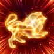
Seventh Sense boosts Aiolia's Fury Attack and adds Stun to his normal attacks.
[Fury Type]
Note: Always in effect.
Score Plus BT II (Delayed) (60039100)
Increases Crusade Score earned during a battle.
[Max Level: 20]
Note: Score Plus BT effect can be stacked.
Note: Only activated when this character is included in the Attack party.
Athena (10004001)
Orb of Life (60040001)
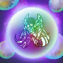
Athena's Cosmo embraces all allies and creates barriers of Light around them that absorb a set amount of damage for 12 seconds.
[Fury Type]
Note1: The barriers disappear once damage absorbed reaches its limit.
Note2: Barrier effect
Goddess Blessing (60040002)
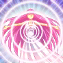
By the Goddess Athena's blessing, recovers all allies' HP and reduces cooldown time.
[Fury Type]
Purifying Light (60040003)
After unlocking Debuff effect on all allies, gives a shield that absorbs fury damage randomly to one to five allies.
[Fury Type]
Loving Wave (60040004)
By the wave of love, nullifies status ailments received by all allies with a fixed probability.
[Fury Type]
Note: Always in effect
Seventh Sense (60040007)
Score Plus BBA III (Intensive) (60040100)
Increases Crusade Score earned during a Big Bang Attack.
[Max Level: 20]
Note: Score Plus BBA effect can be stacked.
Note: Only activated when this character is set as an ATK Saint.
Poseidon (10004101)
Tempest (60041001)
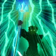
Summons a column of water with his Trident and inflicts Physical Damage with Accuracy effect on enemies in a wide range multiple times.
Decreases Evasion of hit enemies.
[Physical Type]
Note: Becomes invincible while this skill is active.
Poseidon's Trident (60041002)
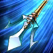
Strikes enemies with a wide horizontal lightning attack, inflicting wide-range Physical Damage with Accuracy effect on them.
Decreases Evasion of hit enemies and blows them to the back.
[Physical Type]
Note: Nullifies Fury Damage while this skill is active.
Ocean Blessing (60041003)
With the blessing of the ocean, automatically recovers all allies' HP for a set period of time.
Also, removes all status ailments and debuffs on all allies when recovering their HP.
[Fury Type]
Sea God's Protection (60041004)
With the protection of Sea God, gradually recovers all allies' HP.
[Fury Type]
Note: Always in effect.
Seventh Sense (60041007)
Score Plus BBA III (Standard) (60041100)
Increases Crusade Score earned during a Big Bang Attack.
[Max Level: 20]
Note: Score Plus BBA effect can be stacked.
Note: Only activated when this character is set as an ATK Saint.
Poseidon (10016001)
New Seiya (10004201)
Pegasus Comet Fist (60042001)
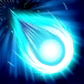
Quickly gets close to enemies and inflicts an attack ingnoring Physical Defense with his Pegasus Comet Fist.
Returns to his position after the attack.
[Physical Type]
Fighting Spirit Torch (60042002)
Own Cosmo is further ignited by defeating enemies, and creates a barrier that reduces damage five times and prevents debuffs. While barrier exists, Cosmos Gauge heals each time an enemy hit is received. (Max five times).
[Fury Type]
Note: Barrier effect.
New Pegasus Power (60042003)
Using the holy power of Pegasus, becomes immune to Movement, Evasion and Attack from one enemy.
[Fury Type]
Pegasus Meteor Fist (60042004)
Seiya's fist approaches the speed of light and pierces into the enemy ranks, ignoring Physical Defense.
[Physical Type]
Seventh Sense (60042007)
Score Plus BT I (Standard) (60042100)
Increases Crusade Score earned during a battle.
[Max Level: 20]
Note: Score Plus BT effect can be stacked.
Note: Only activated when this character is included in the Attack party.
New Shiryu (10004301)
Rozan Dragon Flight (60043001)
Charges at enemy with dragon fury. Invulnerable while charging. After initial charge, does combo attack in enemy ranks.
[Fury Type]
Note: No combo attacks during Boss battles. If Dragon's Wrath is learned, can return to own side.
Rozan Rising Dragon (60043002)
Does damage to enemies surrounding hit target.
[Fury Type]
Dragon's Wrath (60043003)
Heals wounds taken in enemy ranks and returns to own ranks after using Rozan Dragon Flight.
[Fury Type]
Note: Occurs during combo attack after Charge Skill used.
Burning Friendship (60043004)
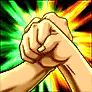
Raises own Aura using the power of friendship.
[Fury Type]
Note: Always in effect.
Seventh Sense (60043007)
Score Plus BT I (Standard) (60043100)
Increases Crusade Score earned during a battle.
[Max Level: 20]
Note: Score Plus BT effect can be stacked.
Note: Only activated when this character is included in the Attack party.
New Hyoga (10004401)
Aurora Thunder Attack (60044001)
Inflicts fury damage with a powerful freezing storm. An Absolute Zero cold hangs over the path taken by the ultimate move, causing serial damage in a wide range.
[Fury Type]
Freezing Fist (60044002)
Leg freezing move from Siberia. Target's movement is stopped by instantaneously freezing them to the spot before inflicting damage.
[Fury Type]
Diamond Dust (60044003)
Inflicts Fury Damage on multiple enemies and increases their attack wait time.
[Fury Type]
Permafrost Protection (60044004)
Gradually restores all allies' Cosmos.
[Fury Type]
Note: Always in effect.
Seventh Sense (60044007)
Score Plus BT I (Delayed) (60044100)
Increases Crusade Score earned during a battle.
[Max Level: 20]
Note: Score Plus BT effect can be stacked.
Note: Only activated when this character is included in the Attack party.
New Shun (10004501)
Nebula Storm (60045001)
Sacrifices own HP to fire a Nebula Storm toward the enemy.
Number of attacks varies depending on amount of own HP remaining.
[Fury Type]
Rolling Defense (60045002)
If his barrier of chains is able to hold for 5 seconds, revives him. The barrier breaks after taking a certain number of attacks and he becomes unable to fight. When he revives, stuns enemies.
[Fury Type]
Note1: Can be used up to 3 times.
Note2: If the barrier gets broken, this skill cannot be activated.
Note3: The barrier can take 2 to 4 Physical attacks.
Nebula Chain (60045003)
Fires a chain at enemies in front, inflicting fury damage.
[Fury Type]
Cosmo Current (60045004)
Creates a Cosmo Current after battle starts, and temporarily raises own Fury Attack for a set time.
[Fury Type]
Seventh Sense (60045007)
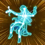
Awakened to the Seventh Sense, Shun's Fury Attack increases whenever his HP drops by 10%.
Also, reduces only once enemies' Cosmo Gauge when he takes damage that equals or exceed his current HP.
[Fury Type]
Note1: Always in effect.
Note2: Cosmo Gauge Reduction can be activated once per wave.
Combo Plus I (60045100)
Gets additional Combos during a battle.
[Max Level: 4]
Note: Combo Plus effect can be stacked.
Note: Only activated when this character is included in the Attack party.
New Ikki (10004601)
Phoenix Wingflap (60046001)
Taunts a single enemy to cancel their action and lower their Physical Defense. Also, while firing, causes enemy to target self.
[Physical Type]
Phoenix Phantom Fist (60046002)
Fires Phoenix Phantom Fist at farthest enemy and causes damage and Stun effect to all enemies touched by Ikki. Also, Ikki is invulnerable while attacking. After attack, returns to battlefield spot.
[Physical Type]
Inferno Wing (60046003)
By donning a flaming aura, Ikki's Physical Defense is temporarily increased and physical damage received is partially rebounded back.
[Physical Type]
Note1: Barrier effect.
Note2: Received damage reflected back as Fury Type.
Phoenix Flaming Wings (60046004)
Shoots flame at farthest enemy and all enemies in a line suffer physical damage, reduced accuracy and Stun effect. Also, Ikki is invulnerable while attacking.
[Physical Type]
Seventh Sense (60046007)
Combo Plus I (60046100)
Gets additional Combos during a battle.
[Max Level: 4]
Note: Combo Plus effect can be stacked.
Note: Only activated when this character is included in the Attack party.
Baian (10004701)
God's Breath (60047001)
Creates a giant tornado and inflicts Fury Damage and Blow effect on enemies in a wide range.
[Fury Type]
Rising Billows (60047002)
Creates a water vortex that inflicts Fury Damage on the closest enemy. Blows hit enemies to the back.
[Fury Type]
Seahorse Roar (60047003)
Creates three tornadoes that cause Fury Damage to three random enemies.
[Fury Type]
Note: In case of two enemies or fewer, damage may be duplicated.
Seahorse Protection (60047004)
Seahorse Protection raises own Aura.
[Fury Type]
Note: Always in effect.
Seventh Sense (60047007)
Awakened to the Seventh Sense, Physical Defense of Baian and all Marinas increases.
The more Marinas in the party, the stronger the effect becomes.
Also, adds Launcher to basic attacks.
[Fury Type]
Note: Always in effect.
Score Plus BT I (Intensive) (60047100)
Increases Crusade Score earned during a battle.
[Max Level: 20]
Note: Score Plus BT effect can be stacked.
Note: Only activated when this character is included in the Attack party.
Sorento (10004801)
Dead End Symphony (60048001)
By playing a magic flute, all enemy suffer temporary debuff to their Movement, Attack and Evasion abilities.
[Physical Type]
Dead End Climax (60048002)
Fires a wide sound wave that inflicts physical damage on enemies.
[Physical Type]
Magic Flute Lure (60048003)
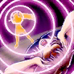
The sound of a magic flute attacks the enemy's central nervous system, inflicting fury damage and Stun effect.
[Fury Type]
Beautiful Melody (60048004)
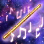
Skill that raises own quickness with a fast step. Evasion stat is enhanced.
[Fury Type]
Note: Always in effect.
Seventh Sense (60048007)
Awakened to the Seventh Sense, Accuracy of Sorento and all Marinas increases.
The more Marinas in the party, the stronger the effect becomes.
Also, adds Stun to basic attacks.
[Fury Type]
Note: Always in effect.
Recovery II (Delayed) (60048100)
Recovers all allies' HP when a battle ends.
[Max Level: 10]
Note1: Recovery effect can be stacked.
Note2: Only activates when assigned as a Defense Saint.
Krishna (10004901)
Flashing Lancer (60049001)
Does a series of thrust attacks at enemy with a Golden Lance. On final thrust, if enemy HP is 30% or lower, damage is greatly increased. If enemy is rendered Fallen on final thrust, Cosmo Gauge is healed.
[Physical Type]
Maha Roshini (60049002)
Krishna summons the Cosmo energy Kundalini and does a series of damage on a single enemy and lowers their Accuracy.
[Physical Type]
Serial Thrust (60049003)
Damages multiple enemies with a sharp series of thrust attacks.
[Physical Type]
Kundalini (60049004)
Physical Defense is raised due to Kundalini.
[Physical Type]
Note: Always in effect.
Seventh Sense (60049007)
Combo Plus I (60049100)
Gets additional Combos during a battle.
[Max Level: 4]
Note: Combo Plus effect can be stacked.
Note: Only activated when this character is included in the Attack party.
Io (10005001)
Vampire Inhale (60050001)
Fires countless bat-shaped shockwaves at enemy front line
that damage Fury by randomly doing 1-5 consecutive attacks.
[Fury Type]
Big Tornado (60050002)
Sends a tornado randomly at the enemy that does temporary Fury Damage in the effect area.
[Fury Type]
Six Sacred Beast Power (60050003)
Six Sacred Beast Power shortens the attack wait time of self or multiple allies. fury resistance is also raised.
[Fury Type]
True Skylla (60050004)
Uses True Skylla power to raise own Vitality.
[Fury Type]
Note: Always in effect.
Seventh Sense (60050007)
Combo Plus I (60050100)
Gets additional Combos during a battle.
[Max Level: 4]
Note: Combo Plus effect can be stacked.
Note: Only activated when this character is included in the Attack party.
Kaasa (10005101)
Electric Barrier (60051001)
Surrounds self with an electric barrier that temporarily reduces damage received.
[Physical Type]
Salamander Shock (60051002)
Finds enemy with the highest Aura and sends a lightning bolt at them which causes physical damage and Stun effect.
[Physical Type]
Sea Monster Magic (60051003)
Restricts target of nearby enemies to self and raises own Physical Defense.
[Physical Type]
Sea Monster Territory (60051004)
For a certain amount of time, lowers own Physical Attack in return for reducing damage received. Defense is also raised.
[Physical Type]
Seventh Sense (60051007)
Damage Cut I (60051100)
Can only use Charge Skills and the Sea Monster Magic, but reduces damage dealt by enemies instead.
[Max Level: 10]
Note1: Only activates when assigned as a Defense Saint.
Note2: If already learned the "Sea Monster Magic", activates it repeatedly.
Isaac (10005201)
Aurora Borealis (60052001)
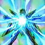
Fires a condensed beam of cold air that inflicts physical damage.
[Physical Type]
Diamond Dust (60052002)
Inflicts fury damage or Freeze effect on multiple enemies.
[Fury Type]
Note: 50% chance of either happening.
Freezing Fist (60052003)
Does ice attack on area close to self and causes physical damage and Knockback effect.
[Physical Type]
Kraken's Protection (60052004)
Kraken Protection Evasion ability.
[Fury Type]
Note: Always in effect.
Seventh Sense (60052007)
Score Plus BT I (Delayed) (60052100)
Increases Crusade Score earned during a battle.
[Max Level: 20]
Note: Score Plus BT effect can be stacked.
Note: Only activated when this character is included in the Attack party.
Kanon (10005301)
Golden Triangle (60053001)
Temporarily sends enemy with most HP to the Otherworld and
inflicts fury damage.
[Fury Type]
Galaxian Explosion (60053002)
Fires multiple meteors at 1 random enemy, inflicts damage and drains Cosmo Gauge.
[Fury Type]
God-Deceiving Power (60053003)
Uses part of own remaining HP to heal ally with lowest HP.
[Fury Type]
Evil Ambition (60053004)
Using Evil Ambition, lowers all enemies' fury resistance.
[Fury Type]
Note: Always in effect.
Seventh Sense (60053007)
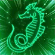
Score Plus BBA I (Delayed) (60053100)
Increases Crusade Score earned during a Big Bang Attack.
[Max Level: 20]
Note: Score Plus BBA effect can be stacked.
Note: Only activated when this character is set as an ATK Saint.
Hades (10005401)
Inferno Sword (60054001)
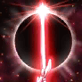
Inflicts Fury Damage and Stun effect on enemy closest to him. If enemy is rendered Fallen, additional damage is done to all enemies.
[Fury Type]
Greatest Eclipse (60054002)
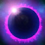
Creates a damage area for a certain interval, where he inflicts Fury Damage ignoring Fury Resistance. Also, own Physical Defense and Fury Resistance is increased.
[Fury Type]
Grim Lunge (60054003)
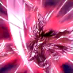
Each time a certain amount of damage is received, a thrust attack is done of farthest enemy that inflicts fury damage and worsens their attack wait time.
[Fury Type]
Hades Breath (60054004)
Using Hades Breath, lowers all enemies' Fury Resistance.
[Fury Type]
Note: Always in effect.
Seventh Sense (60054007)
Score Plus BBA III (Delayed) (60054100)
Increases Crusade Score earned during a Big Bang Attack.
[Max Level: 20]
Note: Score Plus BBA effect can be stacked.
Note: Only activated when this character is set as an ATK Saint.
New Seiya (POG) (10005501)
Pegasus Comet Fist + (60055001)
After jumping, fires Comet Fist. When used, does physical damage to enemy with most remaining HP. Amount of damage done is proportional to amount of own HP lost.
[Physical Type]
Exploding Cosmo (60055002)
Ignites Cosmo and causes random explosions. Enemies caught in explosions receive recurring physical damage.
[Physical Type]
Pegasus Meteor (60055003)
Does a Swoop Kick on enemy closest to inflict fury damage. If enemy is rendered Fallen, own Fury Attack is raised.
[Fury Type]
Note: Damage amount increased next time used.
True Cosmo (60055004)
Manifests a True Cosmo and increases own Max HP.
[Fury Type]
Note: Always in effect.
Seventh Sense (60055007)
Score Plus BBA I (Standard) (60055100)
Increases Crusade Score earned during a Big Bang Attack.
[Max Level: 20]
Note: Score Plus BBA effect can be stacked.
Note: Only activated when this character is set as an ATK Saint.
New Shiryu (POG) (10005601)
Rozan Dragon Flight + (60056001)
Increases Physical Attack, reduces cooldown time and inflicts Physical damage on the closest enemy with Rozan Dragon Flight.
Part of the damage rebounds if enemy is not fallen.
[Physical Type]
Note: After Charge Skill activated, inflicts 4 consecutive basic attcks.
Holy Sword Inheritance (60056002)
Using Holy Sword Inheritance, inflicts recurring physical damage on nearest enemy.
[Physical Type]
Amity Cosmo (60056003)
Amity Cosmo temporarily heals HP of ally with lowest HP.
[Physical Type]
Golden Dragon (60056004)
Raises own fury resistance.
[Physical Type]
Note: Always in effect.
Seventh Sense (60056007)
Score Plus BBA I (Intensive) (60056100)
Increases Crusade Score earned during a Big Bang Attack.
[Max Level: 20]
Note: Score Plus BBA effect can be stacked.
Note: Only activated when this character is set as an ATK Saint.
New Hyoga (POG) (10005701)
Frozen Barrier (60057001)
Raises an ice shield in front of all allies and makes them immune up to 2 times against debuff. Decreases Fury Damage.
Also, inflicts Fury Damage to the enemy when attacked.
[Physical Type]
Note1: Barrier effect.
Note2: Received damage reflected back as Fury Type.
Aurora Execution (60057002)
Inflicts fury damage and Freeze effect on a maximum of 3 enemies.
[Fury Type]
Cygnus Power (60057003)
Creates a barrier that silences enemy when fury damage is taken. While barrier is in effect, it can Silence enemy over and over each time fury damage is received.
[Fury Type]
Note: Barrier effect.
All-Freezing Cosmo (60057004)
When you become Fallen, all enemies are Silenced by the all-freezing Cosmo.
[Physical Type]
Note: Always in effect.
Seventh Sense (60057007)
Score Plus BBA I (Delayed) (60057100)
Increases Crusade Score earned during a Big Bang Attack.
[Max Level: 20]
Note: Score Plus BBA effect can be stacked.
Note: Only activated when this character is set as an ATK Saint.
New Shun (POG) (10005801)
Rolling Defense + (60058001)
Gives himself and 2 random allies a barrier that nullifies enemy attack 2 times and inflicts Fury damage on attacking enemies.
[Fury Type]
Nebula Storm (60058002)
Inflicts Fury Damage and Cosmo absorbing effect to the ennemy hit. Also inflicts Fury Damage around the hit enemy.
[Fury Type]
Thunder Wave + (60058003)
Inflicts Fury Damage on multiple enemies and lowers their Accuracy for 15 sec.
[Fury Type]
Warming Cosmo (60058004)
Raises own Aura with a Warming Cosmo.
[Fury Type]
Note: Always in effect.
Seventh Sense (60058007)
Score Plus BT II (Intensive) (60058100)
Increases Crusade Score earned during a battle.
[Max Level: 20]
Note: Score Plus BT effect can be stacked.
Note: Only activated when this character is included in the Attack party.
New Ikki (POG) (10005901)
Phoenix Phantom Fist + (60059001)
Inflicts Fury damage and Stun on the enemy with the lowest HP based on how much HP they have lost.
[Fury Type]
Note: It doesn't count HP lost before battle in Raid Battle and Cosmo Challenge.
Flame of Life (60059002)
Creates small fire explosions around himself. Touching an explosion heals an ally's HP and Physical Damage to an enemy.
[Physical Type]
Persistent Phoenix (60059003)
Using the power of the Persistent Phoenix, raises own Max HP.
[Physical Type]
Note: Always in effect.
Phoenix Protection (60059004)
Phoenix Protection increases own fury resistance.
[Physical Type]
Note: Always in effect.
Seventh Sense (60059007)
Score Plus BT II (Standard) (60059100)
Increases Crusade Score earned during a battle.
[Max Level: 20]
Note: Score Plus BT effect can be stacked.
Note: Only activated when this character is included in the Attack party.
Sagittarius Seiya (10006001)
New Pegasus Meteor Fist (60060001)
After a series of Pegasus Meteor Fists, delivers a final strike that causes physical damage and Knockback effect. If enemy is rendered Fallen during the attack, own Physical Attack is raised until the wave is over.
[Physical Type]
Sagittarius Arrow (60060002)
Shoots an arrow at enemy that causes physical damage. When it hits, all allies' Physical Attack is increased and attack wait time is shortened.
[Physical Type]
Soaring Wings (60060003)
Heals HP of ally with lowest HP, and temporarily increases their HP Drain ability.
[Fury Type]
Sagittarius Protection (60060004)
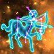
Each time 10 attacks are received, does a thrust attack at farthest enemy. Inflicts fury damage and Knockback effect.
[Fury Type]
Seventh Sense (60060007)
Combo Plus II (60060100)
Gets additional Combos during a battle.
[Max Level: 5]
Note: Combo Plus effect can be stacked.
Note: Only activated when this character is included in the Attack party.
Libra Shiryu (10006101)
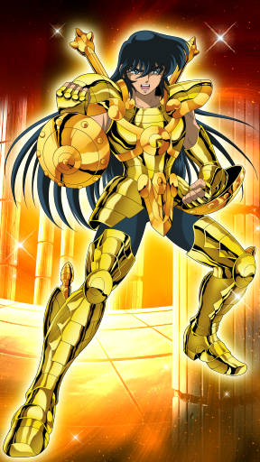
Rozan Hundred Dragons (60061001)
Fires a dragon aura at enemy and, in exchange for own HP, does physical damage.
[Physical Type]
Note: If enemy is rendered Fallen, damage does not reflect back.
New Rozan Dragon Flight (60061002)
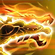
Using Rozan Dragon Flight, does a thrust attack at farthest enemy that causes Stun effect. During the attack, own Physical Defense and Fury Resistance is raised.
[Physical Type]
Goroho Protection (60061003)
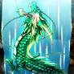
Randomly receive HP healing, Cosmo healing or attack power increase.
[Physical Type]
With the Master (60061004)
Raises own Vitality.
[Fury Type]
Note: Always in effect.
Seventh Sense (60061007)
Damage Cut II (60061100)
Can only use Charge Skills, but reduces damage dealt by enemies instead.
[Max Level: 10]
Note1: Only activates when assigned as a Defense Saint.
Note2: If already learned "Rozan Dragon Flight", activates it at the start of a battle.
Does a sliding attack at farthest enemy and, while attacking, causes fury damage and Blow effect to multiple enemies that are hit.
[Fury Type]
Freezing Coffin (60062003)
Instantly Freezes closest enemy.
[Fury Type]
Aquarius Protection (60062004)
Aquarius Protection increases own Fury Critical.
[Fury Type]
Note: Always in effect.
Seventh Sense (60062007)
Score Plus BT II (Standard) (60062100)
Increases Crusade Score earned during a battle.
[Max Level: 20]
Note: Score Plus BT effect can be stacked.
Note: Only activated when this character is included in the Attack party.
Virgo Shun (10006301)
Circle Defense (60063001)
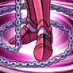
Surrounds self with a chain that temporarily reduces damage received.
[Physical Type]
Great Capture (60063002)
Wraps enemy with chain and lowers their Physical Defense.
[Physical Type]
Nebula Storm (60063003)
Inflicts physical damage to surrounding enemies once a certain amount of damage is received.
[Physical Type]
Virgo Protection (60063004)
Virgo Protection grants you a damage bonus.
[Fury Type]
Note: Always in effect.
Seventh Sense (60063007)
Damage Cut II (60063100)
Can only use Charge Skills, but reduces damage dealt by enemies instead.
[Max Level: 10]
Note1: Only activated when assigned as a Defense Saint.
Note2: Activates "Nebula Storm" after receiving a certain amount of damage, if it has already been learned.
Leo Ikki (10006401)
Inferno Embrace (60064001)
Wraps a single enemy in flame disabling them (can't attack, evade or move), and inflicts continuous damage.
[Fury Type]
Note: This skill does not apply to HP Drain.
New Phoenix Phantom Fist (60064002)
Inflicts fury damage on one enemy. Also, impedes opponent's Charge Skill one time and inflicts additional damage when it is fired off.
[Fury Type]
Lion Hellfire (60064003)
Does 5 rapid consecutive punch attacks. Final punch causes Blow effect and lowers fury resistance.
[Fury Type]
Leo Protection (60064004)
Leo Protection increases the HP Absorb ability only for Fury type attacks.
[Fury Type]
Note: Always in effect.
Seventh Sense (60064007)
Score Plus BT II (Standard) (60064100)
Increases Crusade Score earned during a battle.
[Max Level: 20]
Note: Score Plus BT effect can be stacked.
Note: Only activated when this character is included in the Attack party.
God Cloth Mu (10006501)
Divine Starlight Extinction (60065001)
Starlight that gained divinity nullifies enemies' barriers and throws them down into the center of enemy formation. Also, inflicts damage on enemies surrounding the crash site and nullifies their barriers.
[Fury Type]
Note: If target is down, the crash effect does not occur.
Crystal Wall (60065002)
Sends wall of light at enemy, inflicting damage and causing Knockback effect.
[Fury Type]
Rise in the sky! My Cosmo! (60065003)
Mu's Cosmo, wrapped in God Cloth, gradually heals HP of all ally.
[Fury Type]
Note: Always in effect.
Stardust Revolution (60065004)
Fires a ball of light at all enemies that pierces shields and inflicts damage and Stun effect.
[Fury Type]
Seventh Sense (60065007)
Score Plus BT II (Intensive) (60065100)
Increases Crusade Score earned during a battle.
[Max Level: 20]
Note: Score Plus BT effect can be stacked.
Note: Only activated when this character is included in the Attack party.
God Cloth Saga (10006601)
Divine Galaxian Explosion (60066001)
Launches a giant meteor at enemy ranks that inflicts physical damage. For each hit, own Physical Defense is increased.
[Physical Type]
Another Dimension (60066002)
Inflicts Fury damage and traps the farthest enemy in an alternate dimension for a set period time.
[Fury Type]
Note: This skill pierces opponents' barriers.
Surge! My Cosmo! (60066003)
All enemies' Physical Defense is lowered due to Gemini Saga's surging Cosmo.
[Fury Type]
Note: Always in effect.
Phantom Demon Emperor Fist + (60066004)
Destroys all enemies' will to fight and lowers their Physical Attack and Fury Attack.
[Fury Type]
Seventh Sense (60066007)
Score Plus BT II (Delayed) (60066100)
Increases Crusade Score earned during a battle.
[Max Level: 20]
Note: Score Plus BT effect can be stacked.
Note: Only activated when this character is included in the Attack party.
God Cloth Shaka (10006701)
Heavenly Spirit Supremacy (60067001)
Uses ghostly power to inflict recurring fury damage on random enemies. When hit, enemy action is canceled and action speed is lowered.
[Fury Type]
Siddham (60067002)
After recovering Cosmo Gauge and HP, gives himself a barrier that absorbs damage and makes 3 random enemies' attacks target him for a set period time. When attacked, recovers Cosmo Gauge.
[Fury Type]
Note: The Taunt effect pierces opponents' barriers.
Divine Heaven-Dancing Ring (60067003)
Decreases all enemies' Physical Attack and Fury Attack.
[Fury Type]
Note: This skill pierces opponents' barriers.
Enlightenment Wave (60067004)
When Enlightenment Wave is learned, changes normal attack effect. After changing, inflicts fury damage and lowers the action speed of three random enemies.
[Fury Type]
Seventh Sense (60067007)
Score Plus BT II (Intensive) (60067100)
Increases Crusade Score earned during a battle.
[Max Level: 20]
Note: Score Plus BT effect can be stacked.
Note: Only activated when this character is included in the Attack party.
Shion (Surplice) (10006801)
Stardust Revolution (60068001)
Unleashes countless stardust torward all enemies.
Decreases Accuracy of the enemies who have been hit.
[Physical Type]
Dark Master (60068002)
Decreases his Physical Defense for a set period of time and increases all allies' Physical Attack.
[Fury Type]
Absolute Obedience (60068003)
Activates after taking damage a certain number of times.
Drains random ally's HP and heals himself.
[Fury Type]
Note: This skill pierces allies' barriers.
Specter (60068004)
Revives himself 1 time.
Then drains HP from all allies and heals himself.
[Fury Type]
Note: This skill pierces allies' barriers.
Seventh Sense (60068007)
Score Plus BT III (Intensive) (60068100)
Increases Crusade Score earned during a battle.
[Max Level: 20]
Note: Score Plus BT effect can be stacked.
Note: Only activated when this character is included in the Attack party.
Shion (10006901)
Don't waver now, boys! (60069001)
Sends a stream of light to do a combo attack on one enemy, and the final attack pushes the enemy into the back row.
[Fury Type]
Crystal Wall (60069002)
Raises a Crystal Wall around all allies that heals their HP. It also absorbs enemy attacks and returns them in the form of own HP.
[Fury Type]
Note: Barrier effect.
Stardust Revolution (60069003)
Attacks with stardust and inflicts damage and Stun effect.
[Fury Type]
Holy Domain (60069004)
Holy Domain created by Shion. Enemies that enter suffer recurring damage. Can block 1 time Auto skill activation and inflicts Stun effect.
[Fury Type]
Note1: This skill pierces enemies' barriers.
Note2: Stun effect inactive if Auto skill canceled.
Note3: Already activated Auto skill won't be canceled.
Note4: Revival effect skills won't be canceled.
Seventh Sense (60069007)
Recovery III (Standard) (60069100)
Recovers all allies' HP when a battle ends.
[Max Level: 10]
Note1: Recovery effect can be stacked.
Note2: Only activates when assigned as a Defense Saint.
Deathmask (Surplice) (10007001)
Dark World Waves (60070001)
Unleashes a vortex to the otherworld towards enemies, inflicting damage.
[Physical Type]
Summon Ghost + (60070002)
Summons ghosts from the Dark World and inflicts damage on the closest enemy and surrounding enemies.
[Physical Type]
Lost Soul (60070003)
Unleashes souls toward 2 random enemies and inflicts damage on them.
[Physical Type]
Wall of Fury (60070004)
Resists against opponents' Cosmos by boosting his Cosmo.
Strengthens Fury Resistence stat.
[Fury Type]
Note: Always in effect
Seventh Sense (60070007)
Score Plus BT II (Standard) (60070100)
Increases Crusade Score earned during a battle.
[Max Level: 20]
Note: Score Plus BT effect can be stacked.
Note: Only activated when this character is included in the Attack party.
Aphrodite (Surplice) (10007101)
Protection of Rose (60071001)
An Aura of red roses surrounding him recovers his HP and increases Physical Attack, Physical Defense and Fury Resistence.
[Physical Type]
Fragrance of Confusion (60071002)
Confuses 1 to 3 random enemies by surrounding them with poisoned roses.
[Physical Type]
Raging Thorn (60071003)
Reduces his cooldown time with his rage.
[Fury Type]
Note: Always in effect
Piranha Rose (60071004)
Strikes the farthest enemy with piercing black roses and inflicts damage and Stun on the enemy who has been hit.
[Fury Type]
Seventh Sense (60071007)
Score Plus BT II (Standard) (60071100)
Increases Crusade Score earned during a battle.
[Max Level: 20]
Note: Score Plus BT effect can be stacked.
Note: Only activated when this character is included in the Attack party.
Saga (Surplice) (10007201)
Galaxian Explosion (60072001)
Attacks random enemies with a rain of meteors.
If this attack defeats any enemies, reduces his cooldown time and increases Physical Defense.
[Physical Type]
Note1: Physical Defense Increase effect can be stacked
Note2: Duration time of CD time Reduction can be extended
Power of Underworld (60072002)
Inflicts damage and Knockback on multiple enemies with the power of the Underworld.
[Physical Type]
Wailing Fist (60072003)
Strikes enemies with his wailing fist and inflicts damage on enemies who have been hit.
[Physical Type]
Dark Energy (60072004)
With the power of Specters, reduces his cooldown time and damage received. Also, increases HP Drain with Physical type attacks.
[Fury Type]
Note: Always in effect
Seventh Sense (60072007)
Combo Plus II (60072100)
Gets additional Combos during a battle.
[Max Level: 5]
Note: Combo Plus effect can be stacked.
Note: Only activated when this character is included in the Attack party.
Shura (Surplice) (10007301)
Excalibur (60073001)
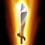
Increases his Physical Critical and uses combo attacks on the farthest enemy.
Also, decreases cooldown time afterwards.
[Physical Type]
Slashing Attack (60073002)
Slashes the closest enemy, and inflicts damage to enemy hit.
[Physical Type]
Specter's Spirit (60073003)
With the Specter spirit, recovers his Cosmo Gauge and increases Evasion for a set period of time.
[Physical Type]
Sword of Shura (60073004)
Increases his Physical Critical and Physical Attack.
[Fury Type]
Note: Always in effect
Seventh Sense (60073007)
Combo Plus II (60073100)
Gets additional Combos during a battle.
[Max Level: 5]
Note: Combo Plus effect can be stacked.
Note: Only activated when this character is included in the Attack party.
Camus (Surplice) (10007401)
Diamond Dust Combo (60074001)
Inflicts damage 3 times on random enemies by striking them with Diamond Dust while repeatedly teleporting.
[Physical Type]
Ice Jail (60074002)
Unleashes a frost blast toward enemies and if the hit connetcs, inflicts continuous damage and disables them for a set period of time.
[Physical Type]
Frozen Barrier (60074003)
Gives himself a barrier that reduces damage received up to 3 times.
[Fury Type]
Note: If he already has a barrier given by a Charge Skill, the previous barrier's effect won't be overwritten.
Benefaction Stream (60074004)
Revives himself 1 time and increases HP Drain.
Strikes forward with Diamond Dust and inflicts damage on enemies who have been hit.
[Physical Type]
Note: Becomes invincible while the skill is active
Seventh Sense (60074007)
Combo Plus II (60074100)
Gets additional Combos during a battle.
[Max Level: 5]
Note: Combo Plus effect can be stacked.
Note: Only activated when this character is included in the Attack party.
Orphee (10007501)
(60075001)
(60075002)
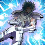
(60075003)
(60075004)
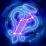
Seventh Sense (60075007)
(60075100)
Gemini Kanon (10007601)
Galaxian Explosion (60076001)
Uses combo attacks on the enemy with the lowest HP and attacks random enemies.
If this attack defeats any enemies, increases his Accuracy and Evasion until the wave ends.
[Fury Type]
Note: Accuracy and Evasion Increase effect can be stacked.
Phantom Demon Emperor Fist (60076002)
The legendary Phantom Fist that can control minds of enemies who are under the spell.
Inflicts continuous damage on 1 enemy and additionally silences the target with a fixed probability.
[Fury Type]
Impact Combo (60076003)
Inflicts combo damage on 1 enemy with a lightspeed punch.
Also, the final hit stuns the target with a fixed probability.
[Physical Type]
Real Power of Gold Saints (60076004)
Whenever he defeats an enemy with basic attacks, increases his Accuracy and Evasion until the wave ends once this skill is learned.
[Physical Type]
Note: Accuracy and Evasion Increase effect can be stacked.
Seventh Sense (60076007)
Score Plus BT II (Standard) (60076100)
Increases Crusade Score earned during a battle.
[Max Level: 20]
Note: Score Plus BT effect can be stacked.
Note: Only activated when this character is included in the Attack party.
Rhadamanthys (10007701)
Greatest Caution (60077001)
Inflicts Fury Damage on enemies in a straight line multiple times.
Enemies hit by the final blow are thrown to the back.
[Fury Type]
Dark Energy of the Underworld (60077002)
Attacks the closest enemy with a shockwave that explodes upon contact and inflicts Fury Damage on surrounding enemies.
Whenever the hit connects, recovers all allies' HP.
[Fury Type]
Wyvern's Claw (60077003)
Inflicts Physical Damage on 3 random enemies with a Knockback effect.
Also, slows down hit enemies.
[Physical Type]
Invisible (60077004)
Increases max HP of Specters.
The more Specters in the party, the stronger the effect becomes.
[Fury Type]
Note: Always in effect.
Seventh Sense (60077007)
Score Plus BBA I (Delayed) (60077100)
Increases Crusade Score earned during a Big Bang Attack.
[Max Level: 20]
Note: Score Plus BBA effect can be stacked.
Note: Only activated when this character is set as an ATK Saint.
Minos (10007801)
Cosmic Marionation (60078001)
Inflicts Fury Damage on enemies with invisible strings.
Cancels Charge Skills of hit enemies.
[Fury Type]
Forced Retreat (60078002)
Gives Taunt to the ally with the highest HP except himself and increases their Evasion.
[Fury Type]
Invisible Strings (60078003)
Inflicts Fury Damage on 1 to 3 random enemies.
Also, knocks back hit enemies.
[Fury Type]
Power of Griffon (60078004)
Nullifies Stun, Knockback, Launch and Blowback for the entire party with a fixed probability.
[Fury Type]
Note: Always in effect.
Seventh Sense (60078007)
Score Plus BBA I (Standard) (60078100)
Increases Crusade Score earned during a Big Bang Attack.
[Max Level: 20]
Note: Score Plus BBA effect can be stacked.
Note: Only activated when this character is set as an ATK Saint.
Aiacos (10007901)
Galactica Illusion (60079001)
Summons multiple mysterious creatures and attacks enemies randomly.
Drains HP of hit enemies and recovers the ally with the lowest HP.
[Fury Type]
Garuda Flap (60079002)
Inflicts Fury Damage with Accuracy effect on the enemy with the highest Cosmo Gauge when activated.
Reduces Cosmo Gauge of hit enemies and cast them into an alternate dimension for a set period of time.
[Fury Type]
Garuda Gust (60079003)
Nullifies all enemies' barriers and cancels movements with a gust of wind.
Also, increases cooldown time.
[Fury Type]
Power of the Three Generals (60079004)
Inflicts Physical Damage on the farthest enemy.
If the hit connects, it knocks back the enemy all the way to the back of the formation.
Seventh Sense (60079007)
Score Plus BBA I (Intensive) (60079100)
Increases Crusade Score earned during a Big Bang Attack.
[Max Level: 20]
Note: Score Plus BBA effect can be stacked.
Note: Only activated when this character is set as an ATK Saint.
God Cloth Camus (10008001)
Divine Aurora Execution (60080001)
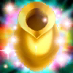
Fires Camus' strongest fist at enemies in front, inflicting Fury Damage and Knockback on all enemies. Also, time difference causes Freeze effect.
[Fury Type]
Diamond Dust (60080002)
Inflicts Fury Damage on enemies and freezes them after a few seconds. The closer the enemies are to Camus, the larger the number of enemies affected.
[Fury Type]
Freezing Coffin (60080003)
Inflicts Fury Damage and Freeze on the farthest enemy.
[Fury Type]
Note: This skill pierces opponents' barriers.
Sparkle! My Cosmo! (60080004)
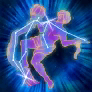
Increases all allies' Accuracy and HP Drain.
[Fury Type]
Note: Always in effect.
Seventh Sense (60080007)
Score Plus BT II (Standard) (60080100)
Increases Crusade Score earned during a battle.
[Max Level: 20]
Note: Score Plus BT effect can be stacked.
Note: Only activated when this character is included in the Attack party.
Sea Dragon (10008101)
Golden Triangle (60081001)
Galaxian Explosion (60081002)
God-Deceiving Power (60081003)
Evil Ambition (60081004)
Seventh Sense (60081007)
(60081100)
Thanatos (10008201)
(60082001)
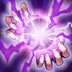
(60082002)
(60082003)
(60082004)
Seventh Sense (60082007)
(60082100)
Hypnos (10008301)
(60083001)
(60083002)
(60083003)
(60083004)
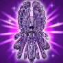
Seventh Sense (60083007)
(60083100)
Final Seiya (10008401)
Wings of Miracle (60084001)
Removes all status effects on both parties and resets their Cosmo Gauge to 0 by Seiya's miracle.
Additionally, recovers all allies' HP.
[Fury Type]
Never Give Up (60084002)
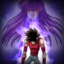
Removes status ailments and debuffs on himself with his strength of will.
Additionally, recovers his HP and Cosmo Gauge.
[Fury Type]
Pegasus Meteor Fist (60084003)
Strikes forward with his sonic fist and knocks back enemies who have been hit. When it hits enemies, it increases all allies' Fury Attack and reduces their cooldown time for a set time.
[Fury Type]
Note1: The Fury Attack buff can be stacked
Note2: The duration of cooldown time reduction effect can be extended
Voice of Friends (60084004)
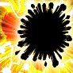
Voice of friends cheers up and encourages Seiya and his comrades.
Increases all allies' Physical Defense and Fury Resistance. Nullifies stun effect inflicted upon him.
[Fury Type]
Note: Always in effect
Seventh Sense (60084007)
Damage Cut III (60084100)
Can only use Charge Skills and the Never Give Up, but reduces damage dealt by enemies instead.
[Max Level: 10]
Note1: Only activates when assigned as a Defense Saint.
Note2: If already learned the "Never Give Up", activates it repeatedly.
Note3: If already learned "Pegasus Meteor Fist", activates it after using the Charge Skill.
Final Shiryu (10008501)
Awakening of Dragon (60085001)
Fully recovers Cosmo Gauge of the ally whose Gauge is the lowest.
Additionally, decreases his Physical Defense and recovers HP.
[Fury Type]
Excalibur (60085002)
Every 3 hits he takes from enemies, inflicts damage that ignores Physical Defense on multiple enemies by slashing them with his sharp chop.
[Physical Type]
Note: It activates even after Charge Skill has been activated.
Wrath of Dragon (60085003)
When an ally becomes unable to fight, a skill that increases his Physical Attack gets added to his movement patterns.
[Fury Type]
Rozan Hundred Dragons (60085004)
Whenever he takes a set amount of damage, inflicts Physical Damage on multiple enemies and knock them back by unleashing his Cosmos that look like countless dragons.
[Physical Type]
Note: It activates even after Charge Skill has been activated.
Seventh Sense (60085007)
Damage Cut III (60085100)
Can only use Charge Skills, but reduces damage dealt by enemies instead.
[Max Level: 10]
Note1: Only activated when assigned as a Defense Saint.
Note2: Activates "Excalibur" after receiving an attack 3 times or using the Charge Skill, if it has already been learned.
Note3: Activates "Rozan Hundred Dragons" after receiving a certain amount of damage or using the Charge Skill, if it has already been learned.
Final Hyoga (10008601)
Ice Wall of Absolute Zero (60086001)
Gives all allies a barrier that blocks damage and status ailments 1 time and freezes enemies as a counter-attack.
[Fury Type]
Note: If the barrier blocks a status ailment with no damage, it stays up.
Essence of Freezing Cloud (60086002)
Cancels Freeze, Launch and Blowback against all allies with a fixed probability. Additionally, blocks Petrify against himself with a fixed probability.
[Fury Type]
Note: Always in effect
Freezing Field (60086003)
Increases all allies' Fury Resistance by spreading Hyoga's Freezing Cloud in the battle field. Additionally, decreases all enemies' Fury Critical and increases their cooldown time.
[Fury Type]
Aurora Execution (60086004)
When he either takes a set amount of damage or activates his Charge Skill, unleashes Aura Execution toward enemies and inflicts Freeze and damage on those who have been hit.
[Fury Type]
Seventh Sense (60086007)
Damage Cut III (60086100)
Can only use Charge Skills, but reduces damage dealt by enemies instead.
[Max Level: 10]
Note1: Only activated when assigned as a Defense Saint.
Note2: Activates "Aurora Execution" after receiving a certain amount of damage or using the Charge Skill, if it has already been learned.
Final Shun (10008701)
New Great Capture (60087001)
Binds enemies with his chains that can even tie up a huge bear.
Disables movements of the enemies on the front two rows (can't attack, evade or move) and inflicts continuous damage on them.
[Physical Type]
New Circle Defense (60087002)
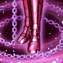
Twirls the chains around Shun, inflicts damage and knocks back enemies if they get close. Increases allies' Physical Defense when they are close to the chains.
[Fury Type]
Rolling Defense (60087003)
Gives all allies on the front row and him a barrier that blocks damage and status ailments 2 times regardless of Attack Type, and disables attacking enemies' movements (can't attack, evade or move).
[Physical Type]
Noble Vessel (60087004)
Decreases the entire enemy team's Evasion and Accuracy.
[Fury Type]
Note: Always in active
Seventh Sense (60087007)
Combo Plus II (60087100)
Gets additional Combos during a battle.
[Max Level: 5]
Note: Combo Plus effect can be stacked
Note: Only activated when this character is included in the Attack party.
Final Ikki (10008801)
Phoenix Flaming Wings (60088001)
Wings of Phoenix that even crushes stars.
Inflicts damage on emenies ahead and reduces their Cosmo Gauge.
[Fury Type]
Law of Saint (60088002)
Increases Evasion and adds Cosmo Gauge Absorb to basic attack.
[Fury Type]
Note: Always in effect
Flame Palm (60088003)
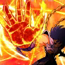
Approaches to the closest enemy and inflicts Physical Damage and Silence around the enemy.
[Physical Type]
Handful of Ash (60088004)
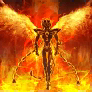
Activates when his HP becomes lower than 30%.
Recovers his HP and increases Physical Attack and Fury Attack.
[Fury Type]
Seventh Sense (60088007)
Combo Plus II (60088100)
Gets additional Combos during a battle.
[Max Level: 5]
Note: Combo Plus effect can be stacked.
Note: Only activated when this character is included in the Attack party.
God Cloth Seiya (10008901)
True Pegasus Comet Fist (60089001)
Attacks enemies in the front two rows and inflicts Stun. Teleports in front of the enemy with the lowest HP and uses the Pegasus Comet Fist. This chain of attacks pierces barriers.
Note: Becomes invincible while performing Teleport and the Pegasus Comet Fist.
[Physical Type]
Ultimate Pegasus Meteor Fist (60089002)
Attacks enemies in the front two rows and inflicts Stun. Also, gives all allies a barrier that absorbs damage.
[Physical Type]
The Neigh of Pegasus (60089003)
Kicks a single enemy multiple times in a row and inflicts Stun. Whenever the hit connects, increases own Physical Defense.
[Physical Type]
Ultimate Pegasus Comet Fist (60089004)
This attack has Blowback and Accuracy effects.
Inflicts piercing damage on all hit enemies.
[Physical Type]
Seventh Sense (60089007)
Score Plus BT III (Standard) (60089100)
Increases Crusade Score earned during a battle.
[Max Level: 20]
Note: Score Plus BT effect can be stacked.
Note: Only activated when this character is included in the Attack party.
God Cloth Shiryu (10009001)
True Rozan Rising Dragon (60090001)
Strikes the farthest enemy with Rozan Hundred Dragons and Rozan Rising Dragon, inflicting Physical Damage multiple times.
Rozan Rising Dragon has Accuracy effect.
[Physical Type]
Ultimate Rozan Rising Dragon (60090002)
Inflicts Physical Damage on 1 to 3 random enemies.
Launches hit enemies into the air.
[Physical Type]
Ultimate Rozan Dragon Flight (60090003)
Charges into the back of enemy formation and inflicts Physical Damage on enemies who have been hit by the charge.
Also, inflicts Stun on hit enemies.
[Physical Type]
Note: This skill pierces opponents' barriers.
Ultimate Old Master's Lesson (60090004)
Gradually restores all allies' Cosmo Gauge.
[Fury Type]
Note1: Always in effect.
Note2: This effect cannot be stacked with the effect of New Cygnus Hyoga's Permafrost Protection.
Seventh Sense (60090007)
Score Plus BBA II (Delayed) (60090100)
Increases Crusade Score earned during a Big Bang Attack.
[Max Level: 20]
Note: Score Plus BBA effect can be stacked.
Note: Only activated when this character is set as an ATK Saint.
God Cloth Hyoga (10009101)
True Diamond Dust (60091001)
Instantly freezes multiple enemies with a Freeze Ring and does a multi-hit with Diamond Dust.
[Fury Type]
Ultimate Diamond Dust (60091002)
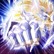
Unleashes a freezing cloud created by Cosmo towards enemies and disables Physical Critical and Fury Critical for a set period of time.
[Fury Type]
Freeze Ring (60091003)
Inflicts damage on multiple enemies with a rebounding Freeze Ring.
Freezes enemies 6 sec. after being hit.
[Fury Type]
Note: This skill pierces opponents' barriers.
Ultimate Aurora Thunder Attack (60091004)
Releases a powerful freezing cloud, inflicting Fury Damage with Accuracy effect on the enemy with the highest Aura. Temporarily binds hit enemies.
[Fury Type]
Seventh Sense (60091007)
Score Plus BBA II (Intensive) (60091100)
Increases Crusade Score earned during a Big Bang Attack.
[Max Level: 20]
Note: Score Plus BBA effect can be stacked.
Note: Only activated when this character is set as an ATK Saint.
God Cloth Shun (10009201)
True Thunder Wave (60092001)
Chains of the Andromeda God Cloth chase their target until they catch it.
Inflicts Fury damage on all enemies and decreases Physical Attack and Fury Attack of the enemies who have been hit for a set period of time.
[Fury Type]
Note: Becomes invincible while the skill is active.
Ultimate Rolling Defense (60092002)
Gives allies on the Middle Row a barrier that absorbs damage dealt by enemies and recovers HP for a set period of time. Also, nullifies status ailments whil the barrier is up.
[Fury Type]
Note: Barrier effect
Nebula Stream (60092003)
Nebula Storm strikes enemies on the Middle Row and the Back Row, nullifies Barrier effects and disables their movements for a set period of time.
[Fury Type]
Ultimate Nebula Storm (60092004)
A storm of Cosmo strikes and inflicts Fury damage on all enemies. Decreases Physical Defense and Fury Defense of the enemies who have been hit for a set period of time.
[Fury Type]
Seventh Sense (60092007)
Score Plus BT III (Intensive) (60092100)
Increases Crusade Score earned during a battle.
[Max Level: 20]
Note: Score Plus BT effect can be stacked.
Note: Only activated when this character is included in the Attack party.
God Cloth Ikki (10009301)
True - Phoenix Flaming Wings (60093001)
Strikes enemies with the wings of Phoenix and inflicts wide-ranged Fury damage.
Also, decreases HP Drain of enemies who have been hit, cancels once 1 enemy Charge Skill for a set period of time and inflicts Stun.
[Fury Type]
Note1: Stun effect activates when a Charge Skill is canceled.
Note2: Cannot cancel active Charge Skills.
Note3: Cannot cancel Revive type skills.
Ultimate Phoenix Phantom Fist (60093002)
Strikes with a fist that destroys enemies' minds and inflicts damage piercing Phsycial Defense.
Also, if the hit connects, cancels 1 enemy Auto Skill and inflicts Stun.
[Physical Type]
Note1: This skill pierces opponents' barriers.
Note2: Stun effect will be activated when an Auto Skill is canceled.
Note3: Cannot cancel active Auto Skills.
Note4: Cannot cancel Revive type skills.
Ultimate Phoenix Flaming Wings (60093003)
Phoenix's flame rains upon multiple enemies and inflicts Fury damage.
Also, reduces Cosmo Gauge Recovery of the enemies who have been hit.
[Fury Type]
Note: Reduces Cosmo Gauge Recovery when:
-an enemy attacks
-an ally is defeated by enemy attack
-an enemy takes damage
Phoenixcry (60093004)
Increases Accuracy, Physical Attack and Fury Attack of all allies by exploding his Cosmo.
[Fury Type]
Seventh Sense (60093007)
Score Plus BT III (Standard) (60093100)
Increases Crusade Score earned during a battle.
[Max Level: 20]
Note: Score Plus BT effect can be stacked.
Note: Only activated when this character is included in the Attack party.
God Cloth Aldebaran (10009401)
Divine Great Horn (60094001)
Inflicts damage on enemies ahead and knocks them back. If this attack defeats any enemies, increases all allies' Physical Defense for a set period of time.
[Physical Type]
Note: Physical Defense Increase effect can be stacked.
Bull's Hooves (60094002)
Inflicts damage on enemies in a straight line by stomping the ground a create a quake. Also, stuns them with a fixed probability.
If the hit connects, increases his Fury Resistance for a set period of time.
[Physical Attack]
Note: Fury Resistance Increase effect can be stacked.
Armor of Justice (60094003)
Removes all status ailments and debuffs on him by making his Cosmo explode.
Also, reduces damage received for a set period time.
[Physical Type]
Golden Wall (60094004)
God Cloth Aldebaran nullifies Freeze, Launch, Stun and Petrify with a fixed probability by boosting his Cosmo up to its limit.
[Fury Type]
Note: Always in effect
Seventh Sense (60094007)
Recovery III (Intensive) (60094100)
Recovers all allies' HP when a battle ends.
[Max Level: 10]
Note1: Recovery effect can be stacked.
Note2: Only activates when assigned as a Defense Saint.
God Cloth Deathmask (10009501)
Divine Dark World Waves (60095001)
Inflicts damage by projecting his Dark World energy that gained God Cloth power upon enemies ahead .
If this attack defeats any enemies, increases his Fury Attack for a set period of time.
Also, increases damage received by Shiryu.
[Fury Type]
Note: Fury Attack Increase effect can be stacked.
Soul Master (60095002)
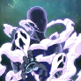
Summons ghosts at the closest enemy's feet and reduces Cosmo Gauge. Also, interrupts Move, Attack and Evasion for a set period of time.
[Fury Type]
Raging Fist (60095003)
Infuriated Deathmask lets his rage take him over and punches the closest enemy multiple times.
If the hit connects, increases own Fury Attack for a set period of time.
[Fury Type]
Note: Fury Attack Increase effect can be stacked.
Return of Cancer (60095004)
When a basic attack connects, increases his Fury Attack for a set period of time once this skill is learned.
[Fury Type]
Note: Fury Attack Increase effect can be stacked.
Seventh Sense (60095007)
Score Plus BT II (Delayed) (60095100)
Increases Crusade Score earned during a battle.
[Max Level: 20]
Note: Score Plus BT effect can be stacked.
Note: Only activated when this character is included in the Attack party.
God Cloth Dohko (10009601)
Divine Rozan Hundred Dragons (60096001)
Ultimate technique of Dohko with the power of the God Cloth.
Unleashes countless dragons toward enemies and inflicts wide-ranged damage.
Also, pierces opponents' barriers.
[Physical Type]
Fierce Tiger's Assault (60096002)
Performs combo attacks on the enemy with the highest Cosmo Gauge.
Also, if the hit connects, drains their Cosmo Gauge.
[Physical Type]
Old Fox (60096003)
Gives himself and 1 random ally an effect randomly between Accuracy Increase (for a set period of time), Evasion Increase (for a set period of time) and Cosmo Gauge Recovery.
[Fury Type]
Survivor of Holy War (60096004)
As a survivor of the previous Holy War, he earns respect from other Gold Saints and reduces damages dealt by Gold Saints.
[Fury Type]
Note: Always in effect
Seventh Sense (60096007)
Combo Plus II (60096100)
Gets additional Combos during a battle.
[Max Level: 5]
Note: Combo Plus effect can be stacked.
Note: Only activated when this character is included in the Attack party.
God Cloth Miro (10009701)
Divine Scarlet Needle Antares (60097001)
Randomly attacks enemies ignoring their Physical Defense.
Reduces Cosmo Gauge of hit enemies
and stuns them with a fixed probability.
Also, increases damage received by Camus.
[Physical Type]
Golden Pride (60097002)
Uses the golden Cosmo of the Gold Saints, the highest rank of saint, to reduce the damage received by Bronze Saints. Raises Cosmo to reduce damage taken.
[Fury Type]
Note: Always in effect.
The Shinchuten (60097003)
Stabs at the Shinchuten of ally with lowest HP and heals HP and Cosmo.
[Fury Type]
Rolling Scarlet Needle (60097004)
Inflicts Physical Damage randomly,
and temporarily lowers their Evasion ability.
[Physical Type]
Seventh Sense (60097007)
Combo Plus II (60097100)
Gets additional Combos during a battle.
[Max Level: 5]
Note: Combo Plus effect can be stacked.
Note: Only activated when this character is included in the Attack party.
God Cloth Aiolos (10009801)
Divine Atomic Thunderbolt (60098001)
Inflicts Physical damage on the farthest enemy multiple times.
If the hit connects, recovers own HP
and decreases Accuracy of hit enemies with a fixed probability.
Also, increases damage received by Saga.
[Physical Type]
Thunder Arrow (60098002)
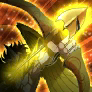
Strikes an attack that pierces through to enemies in the back, and inflicts Fury damage ingnoring Fury Resistanc and Knockback.
[Fury Type]
Note: This skill piecres opponents' barriers.
Golden Fist (60098003)
Replaces his basic attacks with Golden Fist once this skill is learned.
If Golden Fist hits or defeats enemies, recovers his HP and removes debuffs and status ailments.
[Physical Type]
Saint's Mirror (60098004)
Due to fear of Saint's Mirror Aiolos, Fury Attack of all enemies is lowered.
[Fury Type]
Note: Always in effect.
Seventh Sense (60098007)
Score Plus BT II (Standard) (60098100)
Increases Crusade Score earned during a battle.
[Max Level: 20]
Note: Score Plus BT effect can be stacked.
Note: Only activated when this character is included in the Attack party.
God Cloth Shura (10009901)
Divine Excalibur (60099001)
Strikes multiple enemies with a melee attack while teleporting repeatedly. This attack pierces barriers and ignores Physical Defense.
Increases damage received by Aiolos.
[Physical Type]
Mental Concentration (60099002)
By focusing spirit, raises Shura's Accuracy and Evasion ability, reduces cooldown time.
[Physical Type]
Slicing Light (60099003)
Approaches enemy with lowest HP and inflicts physical damage with a powerful slashing attack. For each hit, Shura's Accuracy and Evasion ability is increased.
[Physical Type]
Atomize (60099004)
Shura's Lightspeed movement leads allies. Increases all allies' Evasion ability.
[Fury Type]
Note: Always in effect.
Seventh Sense (60099007)
Score Plus BT II (Standard) (60099100)
Increases Crusade Score earned during a battle.
[Max Level: 20]
Note: Score Plus BT effect can be stacked.
Note: Only activated when this character is included in the Attack party.
God Cloth Aphrodite (10010001)
Divine Bloody Rose (60100001)
Inflicts damage on the enemy with the highest Vitality with deadly roses. Also, drains the enemy's HP, Physical Attack, Fury Attack and Fury Resistance, and inflicts Confuse.
Increases damage received by Vitality-type enemies.
[Fury Type]
Royal Demon Rose Dance (60100002)
Nullifies barriers of enemies within a shower of poisoned roses and inflicts damage. Also, absorbs HP and gives it to the ally with the lowest HP.
Increases damage if enemy is a Vitality-type.
[Fury Type]
Piranha Rose + (60100003)
Nullifies enemies barriers and inflicts damage by unleashing black roses that breaks anything they touch toward them.
Whenever this attack defeats enemies, increases all allies' HP Absorb.
[Fury Type]
Beauty's Arrangement (60100004)
Removes all status ailments and debuffs on him and 1 random ally and recovers HP.
[Fury Type]
Seventh Sense (60100007)
Combo Plus II (60100100)
Gets additional Combos during a battle.
[Max Level: 5]
Note: Combo Plus effect can be stacked
Note: Only activated when this character is included in the Attack party.
Misty (Surplice) (10010101)
(60101001)
(60101002)
(60101003)
(60101004)
Seventh Sense (60101007)
(60101100)
Algol (Surplice) (10010201)
(60102001)
(60102002)
(60102003)
(60102004)
Seventh Sense (60102007)
(60102100)
Moses (Surplice) (10010301)
(60103001)
(60103002)
(60103003)
(60103004)
Seventh Sense (60103007)
(60103100)
Aldebaran (OCE) (10010401)
Great Horn (60104001)
Fires an electric shockwave of light speed from his crossed arms and knocks back enemies. Also, increases damage against Aura-type characters.
[Physical Type]
Grand Knock (60104002)
Inflicts damage and Stun on 1 to 2 enemies from an impact created by hitting the ground.
[Physical Type]
Raging Bull (60104003)
After using Great Horn, gives himself and the ally with the lowest HP a barrier that blocks status ailments and absorbs damage for a set period of time.
[Physical Type]
Fighting Spirit (60104004)
When he takes a set amount of damage, gives himself a barrier that absorbs damage for a set period of time every 12 seconds. If he takes attacks from enemies while the barrier is up, recovers Cosmo Gauge.
[Fury Type]
Seventh Sense (60104007)
By the power of Seventh Sense, adds "Cosmo Gauge Absorb" to his basic attacks.
[Fury Type]
Note: Always in effect
Combo Plus II (60104100)
Gets additional Combos during a battle.
[Max Level: 5]
Note: Combo Plus effect can be stacked.
Note: Only activated when this character is included in the Attack party.
Saga (OCE) (10010501)
Galaxian Explosion (60105001)
Ultimate blow that can even crush stars in the Galaxy.
Inflicts damage and Stun on multiple enemies.
Also, increases damage received by Aura-type opponents.
[Fury Type]
Another Dimension (60105002)
A skill that casts enemies into an alternate dimension.
Ties up the farthest enemy, inflcits damage and then relocate to the back of enemy lines.
Also, decreases Accuracy.
[Fury Type]
Note: This skill pierces opponents' barriers.
Phantom Demon Emperor Fist (60105003)
The legendary Phantom Fist that can control minds of enemies who are under the spell.
Blocks Charge Skills of 3 random enemies for a set period of time.
If the opponents try to use a Charge Skill, stuns them.
[Physical Type]
Note: This skill piecres opponents' barriers.
Incarnation of God (60105004)
Ordinary attacks cannot hurt Saga, the incarnation of God.
Reduces damage dealt by Aura-type opponents.
Also, nullifies Stun and Freeze.
[Fury Type]
Note: Always in effect
Seventh Sense (60105007)
Awakened to the Seventh Sense, adds Cosmo Gauge Reduction to his basic attacks.
[Fury Type]
Note: Always in effect
Combo Plus II (60105100)
Gets additional Combos during a battle.
[Max Level: 5]
Note: Combo Plus effect can be stacked.
Note: Only activated when this character is included in the Attack party.
Deathmask (OCE) (10010601)
Dark World Waves (60106001)
Unleashes a vortex to the otherworld towards enemies, inflicting damage ignoring their Fury Resistance.
Also, increases damage received by Technique-type characters.
[Fury Type]
Summon Ghost (60106002)
Summons ghosts from the Dark World and inflicts damage on enemies. Also, weakens HP Drain of enemies who have been hit.
[Fury Type]
Note: This skill pierces opponents' barriers.
Final Wish (60106003)
Targets enemies randomly when using basic attacks once he learns Final Wish. If a hit connects, increases his Fury Attack for a set period of time.
[Fury Type]
Note: Fury Attack increasing effect can be stacked.
Mask of Curse (60106004)
By the curse of ghosts, decreases all enemies' Evasion and Physical Critical.
[Fury Type]
Note: Always in effect
Seventh Sense (60106007)
Decreases enemies' HP Drain.
[Fury Type]
Note: Always in effect.
Combo Plus II (60106100)
Gets additional Combos during a battle.
[Max Level: 5]
Note: Combo Plus effect can be stacked.
Note: Only activated when this character is included in the Attack party.
Aiolia (OCE) (10010701)
Lightning Plasma (60107001)
Aiolia's most powerful move. Lightspeed punch striking
100 million times in one second.
Inflicts damage on all enemies piercing Physical Defense and decreases their Accuracy.
[Physical Type]
Lion's Roar (60107002)
Approach to the farthest enemy and inflicts Stun on enemies around him.
Also, increases his Physical Attack.
[Physical Type]
Note: This skill pierces opponents' barriers.
Lightning Bolt (60107003)
Inflicts Physical damage on the closest enemy multiple times in a row, ignoring Defense and decreases the enemy's Physical Attack.
[Physical Type]
Fury of Justice (60107004)
Increases damage against enemies.
Also, increases damage received by Saga.
[Fury Type]
Note: Always in effect
Seventh Sense (60107007)
Combo Plus II (60107100)
Gets additional Combos during a battle.
[Max Level: 5]
Note: Combo Plus effect can be stacked.
Note: Only activated when this character is included in the Attack party.
Shaka (OCE) (10010801)
Demon Hunter (60108001)
Attacks 4 times at random. Inflicts Stun and damage ignoring Fury Resistance on hit enemies.
Also, cancels enemy's Charge Skill once and inflicts Stun.
[Fury Type]
Note1: Stun effect activates when a Charge Skill is canceled.
Note2: Cannot cancel active Charge Skills.
Note3: Cannot cancel Revive type skills.
Spirit Guide (60108002)
Inflicts Fury Damage on a random enemy and drains the enemy's Cosmo Gauge.
[Fury Type]
Note: This effect penetrates opponent's barrier.
Heaven-Dancing Ring (60108003)
Chain-attacks multiple enemies. Inflicts Fury damage and Stun when it connects.
Also cancels one enemy Auto Skill and inflicts Stun.
[Fury Type]
Note1: Stun effect activates when an Auto Skill is canceled.
Note2: Cannot cancel active Auto Skills
Note3: Cannot cancel Revive type skills.
The Man Closest to God (60108004)
Nullifies Stun for the entire party with a fixed probability.
[Fury Type]
Note1: Always in effect.
Note2: Cannot nullify when an Auto Skill is canceled.
Note3: Cannot nulllify when a Charge Skill is canceled.
Seventh Sense (60108007)
Combo Plus II (60108100)
Gets additional Combos during a battle.
[Max Level: 5]
Note: Combo Plus effect can be stacked.
Note: Only activated when this character is included in the Attack party.
Miro (OCE) (10010901)
Scarlet Needle Antares (60109001)
Uses a barrier-piercing needle to swiftly stab the farthest enemy and surrounding enemies.
Also, inflicts continuous damage on the enemies who have been hit.
[Physical Type]
Note: This skill pierces opponents' barriers.
Scarlet Needle (60109002)
A crimson needle that stimulates opponents' nerves and causes extreme pain.
Stabs the farthest enemy swiftly.
Also, inflicts continuous damage on the enemies who have been hit.
[Physical Type]
Raging Fire (60109003)
Whenever his HP drops by 10%, increases Physical Attack.
[Fury Type]
Note: Always in effect
Restriction (60109004)
Prevents opponents from moving by interfering with Cosmos circulating inside their bodies.
Disables movements of the farthest enemy and surrounding enemies (can't attack, evade or move) for a set period of time.
[Fury Type]
Note: This skill pierces opponents' barriers.
Seventh Sense (60109007)
Adds Stun to basic attacks.
Also, reduces damage dealt by Bronze Saints.
[Fury Type]
Note: Always in effect.
Combo Plus II (60109100)
Gets additional Combos during a battle.
[Max Level: 5]
Note: Combo Plus effect can be stacked.
Note: Only activated when this character is included in the Attack party.
Shura (OCE) (10011001)
Excalibur (60110001)
Teleports near the enemy with the highest Cosmo Gauge and inflicts Physical Damage with the Holy Sword that has Accuracy effect and nullifies barriers.
This attack ignores Physical Defense.
[Physical Type]
Knife Hand (60110002)
Teleports near the farthest enemy and strikes them with his knife hand.
Inflicts Physical Damage that nullifies barriers and Knockback on enemies in a straight line.
This attack ignores Physical Defense.
[Physical Type]
Self Recovery (60110003)
Whenever he loses 10% HP, increases own Physical Defense and Fury Resistance.
[Fury Type]
Note: Always in effect.
Perception (60110004)
Increases Evasion and HP Drain of all allies.
[Fury Type]
Note: Always in effect.
Seventh Sense (60110007)
Combo Plus II (60110100)
Gets additional Combos during a battle.
[Max Level: 5]
Note: Combo Plus effect can be stacked.
Note: Only activated when this character is included in the Attack party.
Camus (OCE) (10011101)
Aurora Execution (60111001)
Inflicts Fury Damage on enemies in a wide range in front of him.
Reduces Cosmo Gauge and Cosmo Gauge Recovery of hit enemies.
Also, freezes them after a set period of time.
[Fury Type]
Diamond Dust (60111002)
Strikes the closest enemy multiple times with his fist and inflicts Fury Damage.
Freezing cloud formed from the fist pierces enemies and inflicts damage on hit enemies.
Also, decreases their Physical Attack and Fury Attack.
[Fury Type]
Freezing Coffin (60111003)
Instantly freezes the enemy with the highest Cosmo Gauge. The Freeze effect lasts for a long time.
[Fury Type]
True Cold (60111004)
Spreads cold air over the battlefield and decreases all enemies' Evasion.
[Fury Type]
Note: Always in effect.
Seventh Sense (60111007)
Combo Plus II (60111100)
Gets additional Combos during a battle.
[Max Level: 5]
Note: Combo Plus effect can be stacked.
Note: Only activated when this character is included in the Attack party.
Aphrodite (OCE) (10011201)
(60112001)
(60112002)
(60112003)
(60112004)
Seventh Sense (60112007)
(60112100)
Mu (OCE) (10011301)
(60113001)
(60113002)
(60113003)
(60113004)
Seventh Sense (60113007)
(60113100)
Dohko (OCE) (10011401)
Rozan Hundred Dragons (60114001)
Ultimate technique that fires stored Cosmo as countless dragons.
Inflicts piercing Physical damage on all enemies multiple times.
[Physical Type]
Note: Combo on a target breaks if the attack is evaded.
Rozan Rising Dragon (60114002)
Ultimate technique that can reverse even the flow of Rozan Falls.
Inflicts piercing Physical damage on 3 random enemies multiple times.
[Physical Type]
Note: Combo on a target breaks if the attack is evaded.
Libra Shield (60114003)
Libra Shield gives Dohko and the ally with the lowest HP a barrier that reduces damage received and nullifies status ailments for a set period of time. Also inflicts Fury damage on attacking enemies and increases Dohko's Physical Attack when the skill is activated.
[Fury Type]
Scale of Good and Evil (60114004)
Judges a Saint's goodness and decreases all enemies' Evasion.
Also, increases Dohko's Accuracy.
[Fury Type]
Note: Always in effect.
Seventh Sense (60114007)
Combo Plus II (60114100)
Gets additional Combos during a battle.
[Max Level: 5]
Note: Combo Plus effect can be stacked.
Note: Only activated when this character is included in the Attack party.
Aiolos (OCE) (10011501)
Sagittarius Arrow (60115001)
Inflicts Fury damage on all enemies.
Increases damage dealt according to time charged.
When fully charged, nullifies opponents' barriers and increases Fury Attack of allies.
Also, can fire the Arrow of Sagittarius and increase allies' Physical Defense by tapping the icon while charging.
[Fury Type]
Spark of Sagittarius (60115002)
Recovers HP and Cosmo Gauge of the ally with the highest Cosmo Gauge when activated, and also increases Accuracy.
[Fury Type]
Atomic Thunderbolt (60115003)
Fires countless lightning bolts.
Inflicts Fury damage on multiple random enemies.
Also, decreases Accuracy of hit enemies.
[Fury Type]
Great Duty (60115004)
Reduces cooldown time of all allies.
[Fury Type]
Note: Always in effect.
Seventh Sense (60115007)
Combo Plus II (60115100)
Gets additional Combos during a battle.
[Max Level: 5]
Note: Combo Plus effect can be stacked.
Note: Only activated when this character is included in the Attack party.
Shiryu (Disrobed) (10011601)
(60116001)
(60116002)
(60116003)
(60116004)
Seventh Sense (60116007)
(60116100)
New Hyoga (Bandaged) (10011701)
(60117001)
(60117002)
(60117003)
(60117004)
Seventh Sense (60117007)
(60117100)
Odin Seiya (10011801)
Balmung Sword (60118001)
Uses Balmung's Sword to make a Charge Attack against the opponent with the highest HP.
Inflicts damage and decreases Physical Attack and Fury Attack of the opponent if it hits them.
[Physical Type]
Raging Sword (60118002)
Makes a big jump, lands on the closest enemy and swings Balmung's Sword to inflict damage.
Additionally, decreases Accuracy and Evasion.
[Physical Type]
Voice of Friends (60118003)
Voice of friends cheers up and encourages Seiya and his comrades.
Increases all allies' Physical Defense and Fury Resistance.
[Fury Type]
Note: Always in effect
Power of Odin (60118004)
Charges into enemies, swinging Balmung's Sword.
Inflicts damage on the enemies who have been hit and decreases their Physical Critical and Fury Critical
[Physical Type]
Seventh Sense (60118007)
Score Plus BT II (Delayed) (60118100)
Increases Crusade Score earned during a battle.
[Max Level: 20]
Note: Score Plus BT effect can be stacked.
Note: Only activated when this character is included in the Attack party.
Saga (Evil) (10011901)
Galaxian Explosion (60119001)
Ultimate blow that can even crush stars in the Galaxy.
Inflicts huge damage on surrounding enemies.
[Physical Type]
Another Dimension (60119002)
Blows enemy to the Otherworld.
Grabs a single enemy, causes damage, and then sends them to the back row.
[Physical Type]
Phantom Demon Emperor Fist (60119003)
Legendary Phantom Fist that seizes control of an opponent's mind.
Disabling temporarily enemy, then absorbs their Physical Attack and raises his own Physical Attack.
[Physical Type]
Wall of Fury (60119004)
Raises own Cosmo to resist enemy's Cosmo.
Fury Resistance stat is enhanced.
[Fury Type]
Note: Always in effect.
Seventh Sense (60119007)
Score Plus BT II (Intensive) (60119100)
Increases Crusade Score earned during a battle.
[Max Level: 20]
Note: Score Plus BT effect can be stacked.
Note: Only activated when this character is included in the Attack party.
Siegfried (10012001)
Dragon Bravest Blizzard (60120001)
Inflicts Physical Damage on all enemies with an impacting blow and launches them into the air.
While using this skill, his Physical Defense decreases.
[Physical Type]
Invincible Body (60120002)
Recovers own HP and removes status ailments and debuffs.
Also, gives himself a barrier that absorbs Physical Damage 5 times.
[Physical Type]
Odin Sword (60120003)
Inflicts Physical Damage on the closest enemy and surrounding enemies, which nullifies barrier effects.
Reduces Cosmo Gauge of hit enemies and launches them into the air.
[Physical Type]
Captain of Hilda's Guard (60120004)
Increases max HP of all ally God Warriors.
The more God Warriors in the party, the stronger the effect becomes.
[Fury Type]
Note: Always in effect.
Seventh Sense (60120007)
Score Plus BBA II (Intensive) (60120100)
Increases Crusade Score earned during a Big Bang Attack.
[Max Level: 20]
Note: Score Plus BBA effect can be stacked.
Note: Only activated when this character is set as an ATK Saint.
Hgen (10012101)
(60121001)
(60121002)
(60121003)
(60121004)
Seventh Sense (60121007)
(60121100)
Thor (10012201)
(60122001)
(60122002)
(60122003)
(60122004)
Seventh Sense (60122007)
(60122100)
Alberich (10012301)
(60123001)
(60123002)
(60123003)
(60123004)
Seventh Sense (60123007)
(60123100)
Fenrir (10012401)
(60124001)
(60124002)
(60124003)
(60124004)
Seventh Sense (60124007)
(60124100)
Syd (10012501)
Blue Impulse (60125001)
Fires an orb of light at the closest enemy. It creates a tornado upon contact and inflicts Physical Damage on surrounding enemies.
Also, cancels movements of hit enemies and decreases their speed.
[Physical Type]
Viking Tiger Claw (60125002)
Throws countless claws at the closest enemy and inflicts Physical Damage on enemies in a straight line.
Also, inflicts continuous damage on hit enemies.
[Physical Type]
Note: This skill pierces opponents' barriers.
Detention (60125003)
Disables the enemy with the highest HP and inflicts continuous damage.
[Physical Type]
Note: This skill pierces opponents' barriers.
Freezing Cosmo (60125004)
Decreases Physical Critical and Fury Critical of all enemies with freezing Cosmo.
[Fury Type]
Note: Always in effect.
Seventh Sense (60125007)
Combo Plus III (60125100)
Gets additional Combos during a battle.
[Max Level: 6]
Note: Combo Plus effect can be stacked.
Note: Only activated when this character is included in the Attack party.
Bud (10012601)
Shadow Viking Tiger Claw (60126001)
Strikes the enemy with the highest HP with a lightspeed punch, inflicting Physical Damage that nullifies barriers on enemies in a straight line.
Also, inflicts continuous damage on hit enemies.
[Physical Type]
Surprise Attack (60126002)
Charges towards the enemy with the highest Cosmo Gauge and inflicts Physical Damage with Knockback effect.
Reduces Cosmo Gauge of hit enemies.
[Physical Type]
Bond of Brothers (60126003)
Increases Physical Defense and Fury Resistance of all allies for a set period of time at the start of battle.
[Physical Type]
Freezing Cosmo (60126004)
Decreases Physical Critical and Fury Critical of all enemies with freezing Cosmo.
[Fury Type]
Note: Always in effect.
Seventh Sense (60126007)
Combo Plus III (60126100)
Gets additional Combos during a battle.
[Max Level: 6]
Note: Combo Plus effect can be stacked.
Note: Only activated when this character is included in the Attack party.
Mime (10012701)
Stringer Requiem (60127001)
Fires harp strings and inflicts Fury damage and Bind on hit enemies. Any allies hit recover HP.
[Fury Type]
Lightning Shadow Fist (60127002)
Deals Physical damage on up to 3 random enemies 3 times in a row. Also, inflicts Taunt on hit enemies.
[Physical Type]
Illusion Ensemble (60127003)
While invincible, teleports around an enemy and confuses surrounding enemies with a Fury attack.
[Fury Type]
Unleashed Memories (60127004)
Increases Fury Attack and Fury Resistance when damage received equals 70% of max HP.
[Fury Type]
Note: Always in effect.
Seventh Sense (60127007)
Score Plus BBA I (Intensive) (60127100)
Increases Crusade Score earned during a Big Bang Attack.
[Max Level: 20]
Note: Score Plus BBA effect can be stacked.
Note: Only activated when this character is set as an ATK Saint.
Hilda (10012801)
Nibelungen Ring (60128001)
Fires a beam of light with the Nibelungen Ring, inflicts Fury damage and drains Cosmo Gauge of hit enemies.
Whenever the hit connects, increases own Fury Attack and Accuracy for a set period of time.
[Fury Type]
Spear of Asgard (60128002)
Charges into 1 random enemy, inflicts damage on enemies in its path and drains their Cosmo Gauge.
Whenever the hit connets during this attack, damage dealt on enemies increases.
[Physical Type]
Note: This skill pierces opponents' barriers.
Protection of the Big Dipper (60128003)
With the Protection of the Big Dipper, Physical Attack and Fury Attack of God Warriors increase.
The more God Warriors in the party, the stronger the effect becomes.
Also, adds Launcher to basic attacks.
[Fury Type]
Note: Always in effect.
Ragnarok (60128004)
Inflicts Fury damage with a Launcher effect on 3 random enemies and drains their Cosmo Gauge.
[Fury Type]
Seventh Sense (60128007)
Score Plus BT III (Standard) (60128100)
Increases Crusade Score earned during a battle.
[Max Level: 20]
Note: Score Plus BT effect can be stacked.
Note: Only activated when this character is included in the Attack party.
New Shiryu (OCE) (10012901)
Rozan Hundred Dragons + (60129001)
Ultimate technique of Dragon that can reverse even the flow of Rozan Falls.
Inflicts Physical damage on all enemies and decreases HP Drain of hit enemies.
[Physical Type]
Koukiken (60129002)
Inflicts Fury damage on the enemy with the highest HP and surrounding enemies with a powerful back fist.
Increases cooldown time of the enemies who have been hit. Also, increases own Physical Defense whenever the hit connects.
[Fury Type]
Rozan Dragon Flight (60129003)
Charges into enemies with the power of Dragon's Fury.
Inflicts damage on the enemy with the highest HP and decreases its HP Drain if the hit connects.
[Physical Type]
Note: This skill pierces opponents' barriers.
Fearless Dragon (60129004)
Shiryu, the Fearless Dragon, nullifies Stun with a fixed probability and removes all status ailments and debuffs on him whenver own HP drops by 10%.
[Fury Type]
Note: Always in effect.
Seventh Sense (60129007)
Combo Plus II (60129100)
Gets additional Combos during a battle.
[Max Level: 5]
Note: Combo Plus effect can be stacked.
Note: Only activated when this character is included in the Attack party.
New Hyoga (OCE) (10013001)
(60130001)
(60130002)
(60130003)
(60130004)
Seventh Sense (60130007)
(60130100)
New Shun (OCE) (10013101)
Nebula Storm + (60131001)
Strikes forward with Nebula Storm and if the hit connects, inflicts damage 3 times in a row, ignoring Fury Resistance.
[Fury Type]
Sanctuary of Nebula Chain (60131002)
Increases Accuracy of all allies and himself.
[Fury Type]
Nebula Stream (60131003)
Disables 3 random enemies with Nebula Stream.
[Fury Type]
Note: This skill pierces opponents' barriers.
Casting Net (60131004)
Activates whenever he takes damage that equals or exceeds 30% of his HP.
Gives himself a barrier that blocks damage and status ailments up to 3 times regardless of Attack Type, and disables attacking enemies' movements (can't attack, evade or move).
[Fury Type]
Note: Barrier effect
Seventh Sense (60131007)
Combo Plus II (60131100)
Gets additional Combos during a battle.
[Max Level: 5]
Note: Combo Plus effect can be stacked.
Note: Only activated when this character is included in the Attack party.
New Ikki (OCE) (10013201)
Protection of Inferno (60132001)
In exchange for decreasing his Physical Defense for 6 seconds,
gives him a barrier that blocks damage and status ailments 6 times.
[Physical Type]
Note: The amount of damage it can block each time has a limit.
Flame of Temptation (60132002)
Gets close to a random enemy and inflicts damage and Taunt.
[Physical Type]
Phoenix Phantom Fist (60132003)
Charges into the farthest enemy, and if the hit connects, inflicts damage and Confuse.
[Physical Type]
Heat Haze (60132004)
Decreases all enemies' Accuracy.
[Fury Type]
Note: Always in effect
Seventh Sense (60132007)
Combo Plus II (60132100)
Gets additional Combos during a battle.
[Max Level: 5]
Note: Combo Plus effect can be stacked.
Note: Only activated when this character is included in the Attack party.
God Cloth Aiolia (Sword) (10013301)
Divine Lightning Plasma (Sword) (60133001)
Attacks all enemies multiple times in a row.
The last hit's damage depends on how much HP enemies have lost in that battle.
[Physical Type]
Note1: HP lost before a battle doesn't affect the damage in battles such as Raid Battle and Cosmo Challenge.
Note2: Becomes invincible while the skill is active.
Lightning Bolt (60133002)
Inflicts Physical damage on a specific enemy 3 times in a row.
Whenever the hit connects, increases his Physical Attack for a set period of time.
[Physical Type]
Lightning Plasma (60133003)
Inflicts Physical damage on all enemies.
Whenever the hit connects, increases his Physical Attack for a set period of time.
[Physical Type]
Sword of Libra (60133004)
Increases all allies' Accuracy.
[Fury Type]
Note: Always in effect.
Seventh Sense (60133007)
Combo Plus III (60133100)
Gets additional Combos during a battle.
[Max Level: 6]
Note: Combo Plus effect can be stacked.
Note: Only activated when this character is included in the Attack party.
God Cloth Mu (Triple Rod) (10013401)
(60134001)
(60134002)
(60134003)
(60134004)
Seventh Sense (60134007)
(60134100)
God Cloth Saga (Spear) (10013501)
Divine Another Dimension (Spear) (60135001)
Nullifies all enemies' barriers and inflicts Fury Damage.
If the hit connects, removes all status effects on them and cast them into an alternate dimension.
[Fury Type]
Divine Lightspeed Fist (60135002)
Approach to the closest enemy and inflicts Physical Damage 4 times in a row.
Also, inflicts debuffs for each attack in decreasing Physical Defense, Fury Resistance, Evasion order.
[Physical Type]
The Libra Spear (60135003)
Adds Cosmo Gauge Reduction to all allies' basic attacks.
[Fury Attack]
Note: Always in effect
Divine Galaxian Explosion (60135004)
Strikes enemies with multiple planets.
Inflicts Fury damage and Stun on enemies who have been hit.
[Fury Type]
Note: This skill pierces opponents' barriers.
Seventh Sense (60135007)
Score Plus BT III (Delayed) (60135100)
Increases Crusade Score earned during a battle.
[Max Level: 20]
Note: Score Plus BT effect can be stacked.
Note: Only activated when this character is included in the Attack party.
God Cloth Shaka (Spear) (10013601)
(60136001)
(60136002)
(60136003)
(60136004)
Seventh Sense (60136007)
(60136100)
God Cloth Camus (Tonfa) (10013701)
(60137001)
(60137002)
(60137003)
(60137004)
Seventh Sense (60137007)
(60137100)
God Cloth Aldebaran (Shield) (10013801)
(60138001)
(60138002)
(60138003)
(60138004)
Seventh Sense (60138007)
(60138100)
God Cloth Deathmask (Tonfa) (10013901)
(60139001)
(60139002)
(60139003)
(60139004)
Seventh Sense (60139007)
(60139100)
God Cloth Dohko (Shield) (10014001)
Divine Rozan Hundred Dragons (Shield) (60140001)
Fires his Cosmo in the form of countless dragons at all enemies and inflicts Physical Damage multiple times.
Also, gives all allies a barrier that absorbs damage for a set period of time and increases their Physical Defense and Fury Resistance.
[Physical Type]
Charging Strike (60140002)
Charges into the farthest enemy and inflicts Physical Damage and Knockback on enemies hit by the charge.
Increases Fury Resistance of all allies during this attack.
[Physical Type]
Rozan Rising Dragon (60140003)
Inflicts Physical Damage on 1 to 3 random enemies and launches them into the air.
[Physical Type]
Star Crushing Libra Weapon (60140004)
Increases Physical Attack and Fury Attack of ally Gold Saints.
The more Gold Saints in the party, the stronger the effect becomes.
[Fury Type]
Note: Always in effect.
Seventh Sense (60140007)
Recovery III (Intensive) (60140100)
Recovers all allies' HP when a battle ends.
[Max Level: 10]
Note1: Recovery effect can be stacked.
Note2: Only activates when assigned as a Defense Saint.
God Cloth Miro (Twin Rod) (10014101)
Divine Scarlet Needle (Twin Rod) (60141001)
Attacks enemies randomly 14 times.
Also, cancels movements of hit enemies and reduces their HP Drain.
[Physical Type]
Divine Restriction (60141002)
Inflicts Fury damage on the enemy with the lowest HP and surrounding enemies.
Also, binds hit enemies.
[Fury Type]
Note: This skill pierces opponents' barriers.
Scarlet Needle Antares (60141003)
Attacks the enemy with the lowest HP.
If the hit connets, cancels movements.
[Physical Type]
Libra Twin Rod (60141004)
Increases all allies' Evasion.
Also, Miro's attack ignores Physical Defense of enemies with a fixed probability.
[Fury Type]
Note: Always in effect.
Seventh Sense (60141007)
Score Plus BBA III (Standard) (60141100)
Increases Crusade Score earned during a Big Bang Attack.
[Max Level: 20]
Note: Score Plus BBA effect can be stacked.
Note: Only activated when this character is set as an ATK Saint.
God Cloth Aiolos (Twin Rod) (10014201)
(60142001)
(60142002)
(60142003)
(60142004)
Seventh Sense (60142007)
(60142100)
God Cloth Shura (Sword) (10014301)
Divine Excalibur (Sword) (60143001)
Swings the Holy Sword towards the closest enemy, nullifies barriers of enemies in a straight line and inflicts damage ignoring Fury Resistance.
Increases own Fury Attack when activated.
[Fury Type]
Blade of Counterattack (60143002)
Gives himself a barrier that blocks damage and status ailments 3 times regardless of Attack Type and launches attacking enemies into the air.
[Fury Type]
Millenary Cutter (60143003)
Creates a sphere near the closest enemy which inflicts Fury Damage with a Knockback effect upon contact. It lasts for a set period of time.
Whenever the hit connects, increases own Fury Attack.
[Fury Type]
Libra Sword (60143004)
Increases Accuracy of all allies.
[Fury Type]
Note: Always in effect.
Seventh Sense (60143007)
Score Plus BBA III (Intensive) (60143100)
Increases Crusade Score earned during a Big Bang Attack.
[Max Level: 20]
Note: Score Plus BBA effect can be stacked.
Note: Only activated when this character is set as an ATK Saint.
God Cloth Aphrodite (Triple Rod) (10014401)
(60144001)
(60144002)
(60144003)
(60144004)
Seventh Sense (60144007)
(60144100)
God Cloth Seiya (10014501)
Divine Pegasus Meteor Fist (60145001)
Inflicts Physical Damage on all enemies with the Meteor Fist.
Stuns hit enemies in the front two rows.
Also, increases damage received by enemies for a set period of time.
[Physical Type]
Ultimate Sagittarius Arrow (60145002)
Fires multiple arrows at random enemies and inflicts Physical Damage. Whenever the hit connects, increases Physical Attack and Fury Attack of all allies and reduces their cooldown time.
[Physical Type]
Divine Thunder Arrow (60145003)
Fires an arrow at the farthest enemy and inflicts Physical Damage with Knockback effect on enemies in a straight line.
Absorbs Cosmo Gauge of hit enemies.
[Physical Type]
Inherited Will (60145004)
Increases own Physical Attack.
If there are 3 or more allies of the same type (Vitality, Aura or Technique) except for himself, increases Cosmo Gauge of all allies at the start of battle.
[Fury Type]
Note1: Always in effect.
Note2: All characters gain the same Cosmo Gauge increase regardless of their type.
Seventh Sense (60145007)
Score Plus BT III (Delayed) (60145100)
Increases Crusade Score earned during a battle.
[Max Level: 20]
Note: Score Plus BT effect can be stacked.
Note: Only activated when this character is included in the Attack party.


 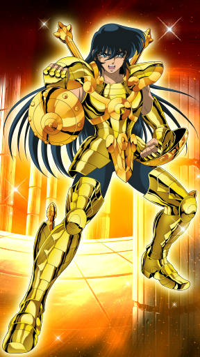
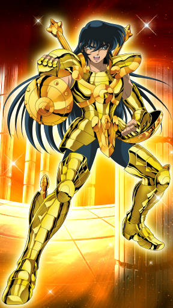